비가 유출로 이어지는 과정
공간 강우가 침투·토양수분·유출로 이어지는 흐름을 봅니다.
기능 살펴보기 →K-WATER · DISTRIBUTED HYDROLOGY
분포형 강우–유출모형 K-DRUM
강우와 지형, 토양의 공간적 차이를 반영해 유역의 저장과 유출을 해석합니다.

공간 강우가 침투·토양수분·유출로 이어지는 흐름을 봅니다.
기능 살펴보기 →강우·증발산·유출·저장량을 하나의 연속 물수지로 연결합니다.
기능 살펴보기 →1D 하천수리와 1D–2D 교환, 2D 범람의 역할을 구분합니다.
기능 살펴보기 →InputStudio, NetCDF와 결과 분석 도구를 준비·실행·분석 흐름으로 연결합니다.
기능 살펴보기 →모형의 전체 구성과 주요 기능을 소개 영상, 발표자료와 18개 기능 이미지로 살펴보세요.
영상은 자연계의 물순환을 설명하는 개념영상이며 실제 수치모의 결과는 아닙니다.
모형 전체 개요 읽기 →공개 논문에서 모형의 활용과 적용 범위를 확인하세요.
K-DRUM은 강우의 위치, 지형, 토양과 저장상태를 격자별로 반영하여 물의 이동을 해석합니다.
공간 강우, 침투, 지표·지표하 유출과 운동파 흐름추적이 모형의 수문 기반을 이룹니다.
K-DRUM은 토양수분, 증발산과 적설·융설을 시간에 따라 연결하여 연속적인 유역 상태를 계산합니다.
1D 하천망·2D 범람·양방향 교환은 개발 완료 기능입니다. 구조물·지형·경계조건과 지원 계산 방식을 확인해 유역에 적용합니다.
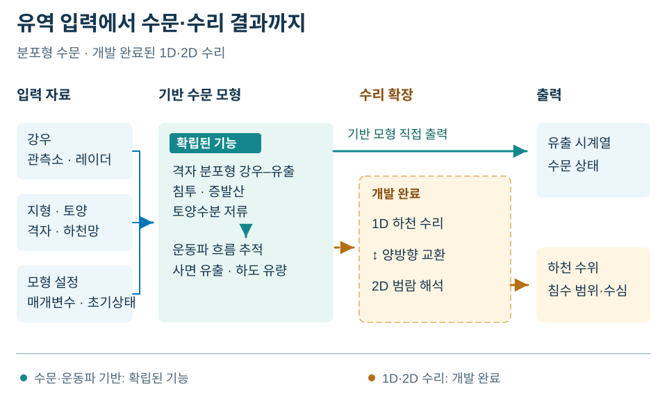
K-DRUM은 격자별 저장상태를 시간에 따라 갱신하며 강우, 침투, 증발산과 유출을 연결합니다. 초기상태와 연속 입력자료는 결과 해석의 주요 조건입니다.
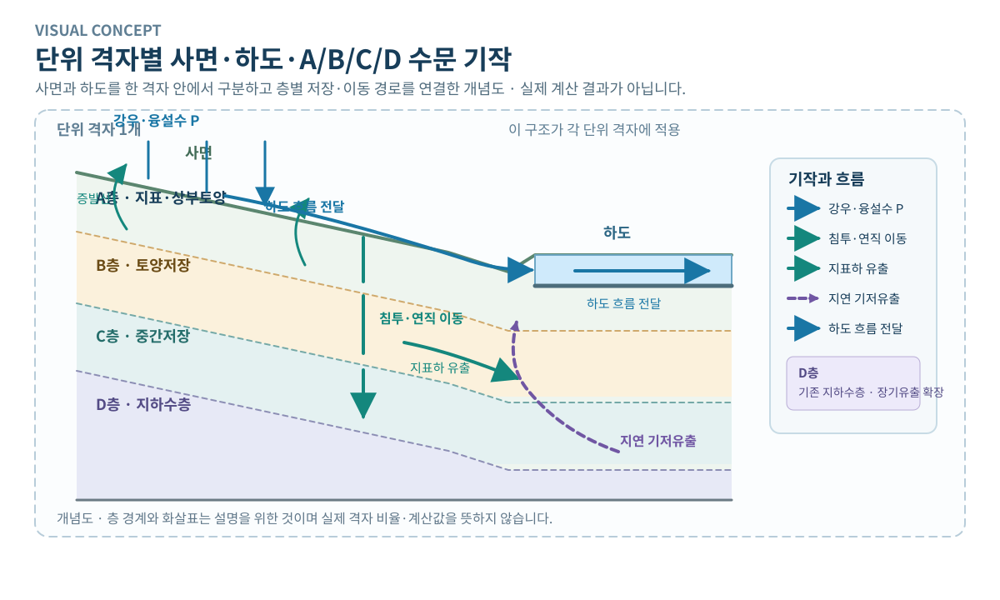
공간 강우 입력은 시간 간격과 단위를 맞춘 관측소 또는 격자 자료를 계산격자에 배분한 값입니다. 결측과 공간배분 오차는 유출 계산에 영향을 줍니다.
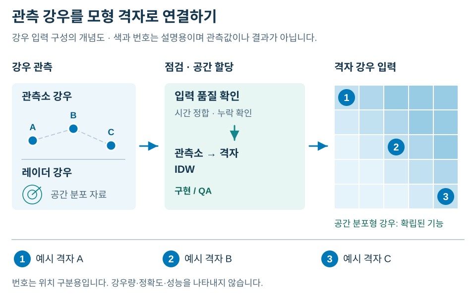
어떤 물리를 남기고, 그것을 격자와 시간단계에서 어떻게 계산하는지 이해합니다. 해석 목적에 맞는 방법을 고른 뒤 필요한 심화 항목을 펼쳐 보세요.
운동파·확산파·국부관성·동역학파는 지배방정식의 근사 수준입니다. 유한체적·차분, 양해·음해는 그 방정식을 계산하는 방법입니다. “동역학파이므로 음해법” 또는 “양해법이므로 운동파”가 되는 것은 아닙니다.
● 유지 · — 생략. 수심평균 수리방정식의 일반적인 비교이며, 아래 항목에서 K-DRUM의 경로를 구분합니다. 작은 화면에서는 표를 좌우로 움직일 수 있습니다.
| 근사 | 국부가속도 | 이류가속도 | 수심경사 | 중력·마찰 | 주요 해석 대상 |
|---|---|---|---|---|---|
| 운동파 | — | — | — | 중력 ≈ 마찰 | 유출 전달·도달시간 |
| 확산파 | — | — | ● | 포함 | 완만한 수면경사 지배 흐름 |
| 국부관성 | ● | — | ● | 포함 | 이류가속도가 작은 비정상 범람 |
| 동역학파 / Full SWE | ● | ● | ● | 포함 | 운동량 변화·중력파 전파 |
“얕다”는 절대 수심이 작다는 뜻만이 아니라 수평 변화 길이에 비해 수심이 작다는 뜻입니다. 연직 가속도의 영향을 작게 보고 압력을 정수압으로 근사하며 수심 방향으로 평균합니다. 그래서 수심이 있는 하천에도 적용할 수 있지만, 낙하류·강한 연직 순환을 모두 재현하는 3차원 해석은 아닙니다.
1D 연속식: 단면적 A [m²], 유량 Q [m³/s], 단위 길이당 측방유입 qₗ [m²/s].
일정 폭의 단순 수로에서 측방 운동량·추가 외력을 생략한 설명식. q = hu는 단위폭 유량 [m²/s], u는 유속, h는 수심, S₀는 하상경사, S_f는 부호를 갖는 마찰경사입니다.
운동파는 가속도와 수심경사를 생략해 S_f ≈ S₀로 놓습니다. 확산파는 가속도를 생략하지만 수면경사를 남깁니다. 국부관성은 국부가속도를 추가하고, 동역학파는 이류가속도까지 다룹니다. 1D·2D는 공간 표현의 차원이므로 이 근사 수준과 별도로 구분합니다.
이론 참고: USACE · Kinematic wave · Clawpack · Shallow-water equations
등류·부등류는 같은 시각에 흐름 방향으로 수심·유속 등이 일정한지 달라지는지를, 정상류·비정상류는 같은 지점에서 시간에 따라 달라지는지를 구분합니다. 정상류도 부등류일 수 있습니다. 운동파에 등류 근사를 적용하더라도 연속식으로 유량·저류량의 시간 변화를 계산하므로 정상류 해석과 동일하지 않습니다.
상류(常流, 아임계류)·한계류·사류(射流, 초임계류)는 프루드수에 따라 구분하는 흐름 상태입니다. 하천 위치를 뜻하는 상류측·하류측과 구분합니다. 기본 개수로 흐름에서 프루드수는 각각 1보다 작거나, 같거나, 큽니다. 도수(跳水)는 사류에서 상류로 전이하면서 수심이 급증하고 에너지가 소산되는 현상입니다. 점변류·급변류는 공간적인 변화의 완만함·급격함을 나타냅니다.
하류 수위나 구조물 등의 영향으로 상류측 수위가 높아지는 현상을 배수위 영향이라고 합니다. 물을 외부로 빼내는 배수(排水)와 구분하며, 배수위 영향이 있어도 반드시 역류하는 것은 아닙니다. 사류·도수 등 해석의 적용 범위는 선택한 계산 방식과 검증 사례를 함께 확인합니다.
이론 참고: USACE · Mixed flow regimes
배수위 영향이 작고 흐름이 주로 경사를 따라 전달된다면 운동파가 출발점입니다. 상류에서 생성된 유출과 사면·하도의 전달시간을 분리해 봅니다.
관련 K-DRUM 기능 →수면경사가 하상경사와 달라지는 상황입니다. 확산파·국부관성·동역학파처럼 수면차를 다루는 접근이 필요하며, 변화가 빠를수록 가속도 항의 중요성을 검토합니다.
관련 K-DRUM 기능 →이류가속도가 작은 범람에서는 국부관성 근사의 계산 효율을 활용할 수 있습니다. 같은 지형과 경계조건에서 도달시간·수심·유량을 함께 비교합니다.
관련 K-DRUM 기능 →이류와 파동 전파가 중요하면 Full SWE가 비교 대상입니다. 더 많은 항을 계산해도 부정확한 지형·경계조건이나 부족한 해상도를 자동으로 해결하지는 않습니다.
관련 K-DRUM 기능 →선택은 경사 하나로 결정하지 않습니다. 유속과 중력파 전파속도의 관계(프루드수 등), 변화 시간, 하류 수위 영향, 단면 변화와 관심 출력이 함께 중요합니다. 조위가 경계에 작용하는 하천과 강우 유출의 도달시간 문제는 요구하는 물리가 다릅니다.
유한체적법은 셀 안의 보존량 변화를 경계로 들어오고 나간 플럭스로 계산합니다. 같은 경계 유량을 양쪽 셀이 공유하면 내부 이동은 전체 합계에서 상쇄됩니다. 유한차분법은 미분을 이웃 값의 차이로 근사하며, 보존형으로 구성할 수도 있습니다. 두 이름만으로 정확도 우열을 정할 수는 없습니다.
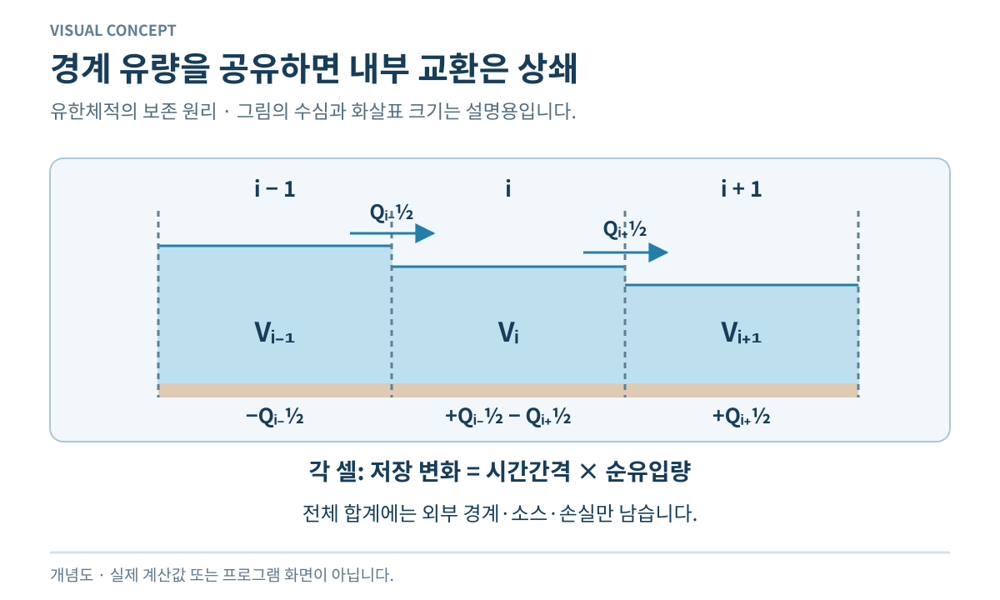
저장체적 V [m³]와 유량 Q [m³/s]의 보존형 갱신 예시. 여러 경계가 있으면 모든 경계 유량을 부호에 맞춰 합합니다.
물수지만 맞춘다고 운동량 해석까지 같아지지는 않습니다. 운동파는 흐름–저장 관계로 유량을 닫고, 국부관성은 이전 유량과 수면차를 사용하며, Full SWE는 질량뿐 아니라 운동량 플럭스도 갱신합니다.
셀 평균값을 경계로 복원하는 방법과 플럭스 계산은 급격한 변화가 얼마나 퍼져 보이는지에 영향을 줍니다. 고차 복원은 매끄러운 구간을 더 잘 표현할 수 있지만, 급변부에서는 진동을 억제하는 제한이 필요합니다. 격자를 줄인 결과가 계속 달라지면 해상도 수렴이 아직 확보되지 않은 것입니다.
양해법은 이미 알려진 상태로 다음 상태를 계산합니다. 음해법은 다음 시점의 미지수가 식 안에 들어가 연립 또는 비선형 문제를 풀어야 합니다. 반음해는 항에 따라 두 처리를 섞습니다. “음해”는 숨겨진 물리라는 뜻이 아니라 미지수의 평가 시점을 뜻합니다.
전진 Euler: 양해 시간적분의 설명 예시.
후진 Euler: 음해 시간적분의 설명 예시. 특정 K-DRUM 모드 전체를 이 식으로 단정하는 것은 아닙니다.
음해법도 큰 시간간격에서 첨두·위상을 흐리게 만들 수 있고 반복해의 수렴이 필요합니다. 양해법은 파동이 셀을 통과하는 속도와 시간간격의 관계가 중요합니다. 안정적으로 끝나는 것과 시간 변화가 충분히 정확한 것은 별개입니다.
단순 1D 천수파의 Courant 수 예시. 허용값은 수치기법에 따르며 2D 계산·생성/소멸항·경계조건은 추가 제약을 가질 수 있습니다.
시간간격을 줄여 주요 지점의 첨두·도달시간·물수지가 충분히 비슷해지는지 비교합니다. 강우 입력 간격, 엔진 내부 계산 간격, 결과 저장 간격은 서로 다를 수 있으므로 파일의 시각만 보고 내부 계산간격을 추정하지 않습니다.
아래는 현재 K-DRUM의 계산 방식과 공개 기능 설명을 함께 정리한 내용입니다. 같은 기능군 안에서도 시간적분법과 경계조건의 조합이 다를 수 있으며, 구현 완료 여부와 적용조건은 각 기능의 현재 상태표를 따릅니다.
기법명이 같아도 경계조건·구조물·연계 방식의 지원 조합은 달라질 수 있습니다. 실행본의 문서와 기능별 적용 범위를 함께 확인해 비교 조건을 맞춥니다.
유입 유량, 하류 수위, 조위, 벽과 개방 경계는 각각 다른 정보를 제공합니다. 상류(常流, 아임계류)에서는 하류측 수위의 영향이 상류측으로 전달될 수 있어 유입량만으로 수위를 결정할 수 없습니다. 경계의 개수와 종류는 유동 상태와 해석 경로에 맞춰야 합니다.
얕은 셀에서 너무 많은 물이 빠져나가면 음의 수심이 생길 수 있습니다. 가용량에 맞춘 유출 처리와 마름·젖음 판정이 필요하며, 임계값 부근 유속은 작은 수심으로 나누기 때문에 민감할 수 있습니다. 단순히 수심을 0으로 바꾼 뒤 물수지를 확인하지 않는 것은 충분하지 않습니다.
이 목록은 사용자가 해석 품질을 판단하는 기준입니다. 홈페이지에 기능이 소개되어 있다는 사실만으로 모든 항목의 검증을 통과했다는 의미는 아닙니다.
수면경사와 이산화의 이론 참고: USACE · Diffusion-wave solver. 외부 문헌은 일반 이론의 출처이며 K-DRUM의 동일 구현·성능을 뜻하지 않습니다.
K-DRUM의 격자 수문은 지표와 A/B/C/D층의 저장·이동을 연결합니다. 강우·융설수는 침투 또는 지표유출에 기여하고, 토양수분은 증발산과 지표하 유출의 공급원이 됩니다. D층은 원래 존재하는 심부 저장이며 지연 복귀·기저유출 표현을 통해 강우가 끝난 뒤의 반응에 기여합니다. 유역 전체로 합산할 때 층간 이동은 내부 항으로 상쇄하고, 증발산·출구유출·영역 밖 심부손실을 외부 항으로 분리합니다.
모두 같은 기간·영역의 체적[m³] 또는 같은 면적으로 환산한 수심[mm]입니다.
Green-Ampt는 습윤전선 전후의 함수율 차이와 흡인수두를 이용해 침투능을 계산합니다. 누적침투가 작은 초기에는 흡인효과가 상대적으로 크고, 시간이 지나면 포화투수계수의 역할이 커집니다. 하지만 실제로 토양으로 들어가는 물은 지표에 공급된 물을 넘을 수 없습니다. 침투량을 계산한 뒤 토양저장 증가와 지표 초과량이 원래 공급량과 맞는지 확인해야 합니다.
대표 설명식: Kₛ·f_c [길이/시간], F·ψf·Wsurface [길이]. 담수고·초기화 등 실제 조건은 별도로 반영합니다.
증발산은 기상 수요를 식생·뿌리 분포에 연결하되 토양 가용수로 제한합니다. 적설·융설은 기온과 지형·시간 보정을 포함한 경험적 경로로 적설수량을 갱신하며, 눈을 물로 환산한 깊이와 적설심은 다릅니다. 이 홈페이지에서 FAO 문헌은 증발산 일반 개념의 참고자료이지 K-DRUM의 모든 수요 계산식이 FAO-56과 동일하다는 뜻이 아닙니다.
각 항은 같은 구간의 물환산 깊이입니다. 융설수는 사라지는 손실이 아니라 수문계로 전달되는 입력입니다.
이론·자료 근거 USACE HEC-HMS: Green and Ampt loss model ↗ · K-DRUM: long-term snowmelt application (2013) ↗ · FAO-56: evaporative demand and crop evapotranspiration ↗
횡단면 X–Z 좌표에서 수위 η에 따른 통수면적 A, 수면폭 T, 윤변 P, 동수반경 R=A/P와 정수압 적분 I₁을 산정합니다. 실측 단면의 상대 형상은 유지하고 종단 하상고에 맞게 수직 배치합니다. 단면 폭이나 하상고를 임의로 바꾸면 저장량·통수능력·월류조건이 함께 바뀌므로 단순한 화면 보정으로 취급할 수 없습니다.
A [m²], T·P·R [m], c [m/s]. c는 1D 자유수면파의 단면 의존 전파속도입니다.
현행 동역학파 경로는 유한체적 공간 연산과 하천망 연결을 사용합니다. 셀 경계의 공통 질량 플럭스는 이웃 셀에 반대 부호로 작용합니다. 운동량 플럭스는 Q²/A의 이류항과 gI₁의 정수압 항을 포함하며 비등단면 지형과 마찰 소스를 함께 처리합니다. 코드에 있는 HLLE 계열 플럭스와 제한자를 사용한 재구성 선택은 불연속 부근의 안정성과 매끄러운 영역의 정확도를 조절하는 수치기법이지 새로운 물리 방정식이 아닙니다.
보존형 개요입니다. 비등단면의 압력·지형항을 직사각형 하도식 하나로 대체해서는 안 됩니다.
현재 1D 음해 경로에는 후진 Euler와 TR-BDF2가 연결되어 있습니다. 후진 Euler는 다음 시점 상태의 잔차를 풀며, TR-BDF2는 사다리꼴 중간단계와 BDF2 후속단계를 결합합니다. 비선형 반복은 상태·수리량·플럭스를 다시 평가하여 잔차를 줄이고, 선형화된 연립계를 풀어 보정량을 구합니다. 음해법도 시간간격이 지나치게 크면 첨두·도달시간이 달라질 수 있으므로 수렴 여부와 시간해상도 민감도를 별도로 확인합니다.
음해 잔차와 Newton 보정의 개념식입니다. X: 상태, M: 보존량, J: 잔차의 Jacobian.
분기·합류는 유입·유출 방향, 접합부 저장과 각 연결면의 담당 영역을 일관되게 처리합니다. 상류 유량·측방유입·저수지 방류·하류 수위는 서로 다른 외부 조건이며 중복 투입하지 않습니다. 국부관성 경로는 이류 운동량을 생략하므로 동역학파와 구분하며, DWNET이라는 프로그램 이름만으로 방정식을 판단하지 않습니다. 개발 완료와 개별 실유역의 관측 검증은 별개의 판단입니다.
이론·자료 근거 USACE: 1D unsteady-flow hydrodynamics ↗ · Hodges (2019): conservative finite-volume Saint-Venant forms ↗
2D 국부관성 계산은 국부가속도를 유지하고 이류 운동량을 생략합니다. 한 방향의 경계 단위폭 유량 q는 이전 유량에 수면경사에 의한 변화를 더하고 마찰로 감쇠시킵니다. 마찰항을 반음해로 처리하는 대표 갱신식은 아래와 같으며, 실제 경계의 유효수심·지형과 가용체적 제한이 함께 적용됩니다. x·y방향 경계 흐름은 동일한 셀 저장 갱신에 모입니다.
q [m²/s], hf [m], η [m], Δx [m], Δt [s]. 대표식이며 마른 경계의 세부 처리와 격자방향 조합은 별도입니다.
q는 단위폭 유량이므로 경계 길이를 곱해 체적 유량 Q를 얻습니다. 셀마다 순유입체적을 합하여 저장량을 바꾸고 지형–저장 관계에서 수심과 수면을 구합니다. 직접강우·배수·하천교환은 같은 시간구간의 소스·싱크로 더합니다. 불투수 경계와 계산영역 제외는 다른 조건이므로 셀 포함 여부와 경계 연결을 별도로 정의합니다.
V [m³], Lf [m], σ: 셀에 들어오면 +, 나가면 −인 부호입니다.
Full SWE의 상태는 수심 h와 두 방향 단위폭 유량 hu, hv입니다. 질량뿐 아니라 운동량의 이류와 정수압 플럭스를 HLL 계열 경계 계산으로 갱신하고 지형·마찰을 소스로 반영합니다. HLL은 양쪽 상태 사이를 지나는 파속 범위를 이용하는 근사 Riemann 방식입니다. 공간 복원과 시간적분 차수 선택은 해상도·마름젖음·경계 처리와 함께 평가해야 합니다. 해당 경로의 지원 격자와 결합 조건이 맞는지도 확인합니다.
h [m], u·v [m/s]. 이 식은 2D 평면 천수방정식의 플럭스이며 1D 임의 단면의 압력 적분과 구분됩니다.
얕은 셀에서 유출할 수 있는 물보다 많은 체적이 빠져나가면 음의 수심이 생깁니다. 따라서 공급 가능한 체적, 유효수심, 내부 시간분할과 재시도를 함께 처리합니다. 계산이 끝났다는 이유만으로 급변류 정확도를 판단하지 않고, 수심·유속·전선 이동과 물수지를 비교합니다. 관심영역 다중해상도는 원자료를 묶거나 유지하는 계산망 선택이지 새로운 지형정보의 생성이 아닙니다.
천수파 시간해상도의 대표 관계이며, 2D 방향·소스·연계는 추가 제한을 가질 수 있습니다. C를 모든 모드의 동일 상수로 단정하지 않습니다.
이론·자료 근거 Bates, Horritt & Fewtrell (2010): local-inertial formulation ↗ · Clawpack Riemann book: shallow-water equations ↗ · Hodges (2019): conservative finite-volume Saint-Venant forms ↗
하천 수면, 범람원 수면과 연결 제방고에 따라 월류 또는 복귀를 계산합니다. 교환유량을 시간에 적분한 체적을 하천에서는 제거하고 범람원에 더하며, 복귀에서는 부호를 바꿉니다. 양방향 누적체적은 각각 양의 크기로 보고할 수 있지만 순교환량과 혼동하지 않아야 합니다. 교환 질량수지가 닫히는 것과 각 영역의 전체 물수지·운동량이 보존되는 것은 서로 다른 검사입니다.
모두 같은 확정 시간구간의 체적[m³]을 사용합니다.
현행 양방향 경로는 구간 시작의 상태를 보관하고 1D와 2D의 수리 반응과 교환량을 반복하여 맞춥니다. 반복을 새 물의 유입으로 누적하면 같은 물이 중복 이동하므로 매 시도는 같은 시작상태에서 평가합니다. 최종 교환량과 수위 반응을 확인한 뒤 두 영역을 함께 확정하고, 받아들일 수 없는 구간은 일관되게 재시도합니다. 결과에는 최종 채택된 상태·교환을 사용합니다.
실측 단면은 수중 저수로를 포함하지만 지표 DEM은 이를 충분히 포함하지 않을 수 있습니다. 1D 단면 하상고·좌우안 위치와 2D 지형의 연결을 비교하고 동일 표고 기준을 적용해야 합니다. 수치 계산을 통과시키기 위해 제방고를 임의로 높이거나 가짜 단면을 넣는 방식은 적용 검증을 대신할 수 없습니다. 예제자료와 실제 측량자료의 역할도 구분합니다.
1D 동역학파–2D 국부관성의 양방향 경로, 1D 국부관성 경로, 2D Full SWE 선택 경로, 침수 후보영역 매핑은 서로 구분합니다. 모형 전체에 기능이 있다는 이유만으로 모든 계산기 조합과 경계조건을 자동 지원한다고 안내하지 않습니다. 완료된 핵심 기능은 완료로 표시하면서 조합별 지원 범위를 함께 제시하는 이유입니다.
이론·자료 근거 Bates, Horritt & Fewtrell (2010): local-inertial formulation ↗ · Hodges (2019): conservative finite-volume Saint-Venant forms ↗ · USACE: 1D unsteady-flow hydrodynamics ↗
수리구조물은 상하류 수두와 형상·개구를 입력받아 통과유량을 계산합니다. 저수지 운영은 수위·저류·방류 능력과 최소유량·방류 변화율 등의 조건을 이용해 운영안을 정합니다. 예측 유입을 이용하는 사전방류와 다수 댐 시나리오는 이 결정지원 층의 확장입니다. 실제 시설 제어 권한이나 운영승인을 대신하는 기능으로 설명하지 않습니다.
저수량[m³]과 유량[m³/s]의 보존 개요입니다. H–V 관계와 초기 수위·저장 기준을 함께 적용합니다.
NSE는 관측 평균을 기준으로 한 오차 감소를, RMSE는 원단위 오차 크기를 보여줍니다. 총량 편향은 전체 유출 과대·과소를, 첨두·도달시간 비교는 홍수 반응을 살펴보는 지표입니다. 지표는 같은 유효 시각에 대해 계산해야 하며 결측 처리·평가기간·단위를 명시해야 합니다. 지점 여러 개를 보고하는 것과 모든 매개변수를 동시에 최적화하는 것은 다릅니다.
여기서는 PBIAS 양수를 과대모의로 정의한 설명식입니다. 실제 결과파일의 부호 정의를 확인합니다.
매개변수 보정은 관측 반응을 더 잘 재현하는 값을 찾는 과정입니다. 독립 검증은 보정에 사용하지 않은 기간·자료에서 재현성을 평가합니다. 병렬·메모리 최적화는 계산시간과 자원 사용을 줄이는 것으로, 물리계수 보정과 목적이 다릅니다. 세 작업의 결과를 섞지 않고 실행조건·초기상태·자료 범위를 함께 기록해야 변경 효과를 설명할 수 있습니다.
이론·자료 근거 USACE HEC-HMS: reservoir routing ↗ · USACE: hydraulic structures and flow equations ↗ · Nash & Sutcliffe (1970): river-flow forecasting and model evaluation ↗
워밍업은 초기 상태를 조정하는 계산이고, 초기상태 캐시는 그 일부를 재사용하여 반복 준비를 줄이는 장치입니다. HotStart는 해당 형식이 저장한 시점과 상태를 복원해 이어가는 기능입니다. 수문상태만 복원했는데 적설·저수지·하천망 상태까지 모두 복원했다고 가정해서는 안 됩니다. 연속 계산과 재시작 결과를 같은 시점에서 비교하고 모형·입력·상태 형식의 호환성을 확인합니다.
좌표·차원·단위·시간 원점·결측 표시를 읽어야 배열의 의미를 알 수 있습니다. 유역 격자, 하천 단면, 범람 격자는 서로 다른 공간 표현이며 저장 간격도 다를 수 있습니다. 지도와 그래프를 연결할 때는 실제 시각과 위치를 기준으로 선택하고 원자료 값을 바꾸지 않습니다. 모의 중 부분 파일과 정상 종료 파일도 구분합니다.
운동파의 상하류 전달과 하천망 연결에는 계산 순서의 제약이 있습니다. 독립 작업을 나누더라도 스레드 대기·메모리 접근·파일 출력 비용이 남으며, 작은 유역에서는 작업 분할 비용이 이득보다 클 수 있습니다. 현재 OMP 중심 패키지와 다른 실행계열을 구분하고, 같은 입력·컴퓨터·출력조건에서 결과 일관성과 실제 경과시간을 함께 측정합니다.
완료된 1D 하천·2D 범람 계산은 기능 자체의 구현상태입니다. 특정 유역에서의 적합성은 자료·경계·해상도·관측 비교에 대한 적용 판단입니다. 사용자가 공식적으로 받을 수 있는 파일은 MyWater의 실제 배포 버전과 이용조건을 따릅니다. 따라서 관측자료를 더 검증한다고 이미 완성된 계산 기능을 다시 개발 중이라고 표기하지 않습니다.
이론·자료 근거 Unidata: NetCDF data model ↗ · OpenMP: specifications ↗ · K-DRUM: current capability status and scope ↗
강우·침투·증발산·유출과 사면·하도, A/B/C/D 층의 연결을 보여주는 개념도입니다. 실제 계산 결과가 아니며, 기존 D층과 장기유출 확장 경로를 구분해 표시합니다.
먼저 관심 분야를 고른 뒤, 각 기능에서 활용 목적 → 핵심 원리 → 그림 → 해석 시 확인사항 순서로 읽을 수 있습니다. 완료·구현 기능, 도구 개발, 연구·비활성 기능을 구분해 표시합니다.
지역마다 비가 다르게 내리는 유역을 해석할 때
격자별 강우 시계열, 유역·소유역 강우량과 누적 강우체적.
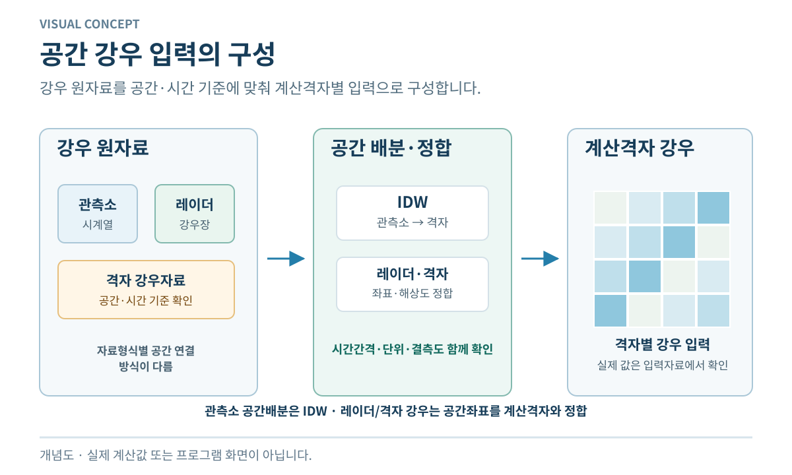
관측소·레이더·격자 강우가 서로 다른 공간 연결 과정을 거쳐 계산격자별 강우 입력으로 구성되는 흐름을 보세요.
관측소 자료는 공간배분을 거쳐 격자 강우로, 레이더·격자 자료는 원자료와 계산격자의 위치 관계에 따라 입력됩니다. 강우 깊이와 강우강도를 구분하고 각 계산 구간의 강우량을 면적으로 환산하여 물수지 입력을 구성합니다. 같은 총강우량이어도 강우가 집중되는 위치가 달라지면 유출 도달시간과 첨두 반응이 달라집니다.
강우 시계열 또는 강우장, 관측 위치·좌표계, 계산격자, 시간 간격과 결측 표시.
Pᵢ: 구간 강우량[mm], Aᵢ: 격자면적[m²], Vₚ: 강우체적[m³]. 강우량을 체적으로 바꾸는 집계식입니다.
격자별 강우 시계열, 유역·소유역 강우량과 누적 강우체적.
이론·자료 근거 K-DRUM: radar rainfall and GIS-based runoff (2012) ↗
관련 이론·수치방법 자세히 보기 →시간대, 누적구간의 시작·종료 기준, mm와 mm/h, 원자료와 계산격자의 유효 영역을 맞춥니다.
관측소 강우를 IDW로 공간배분할 때
계산격자별 강우와 공간적인 강우 집중 분포.
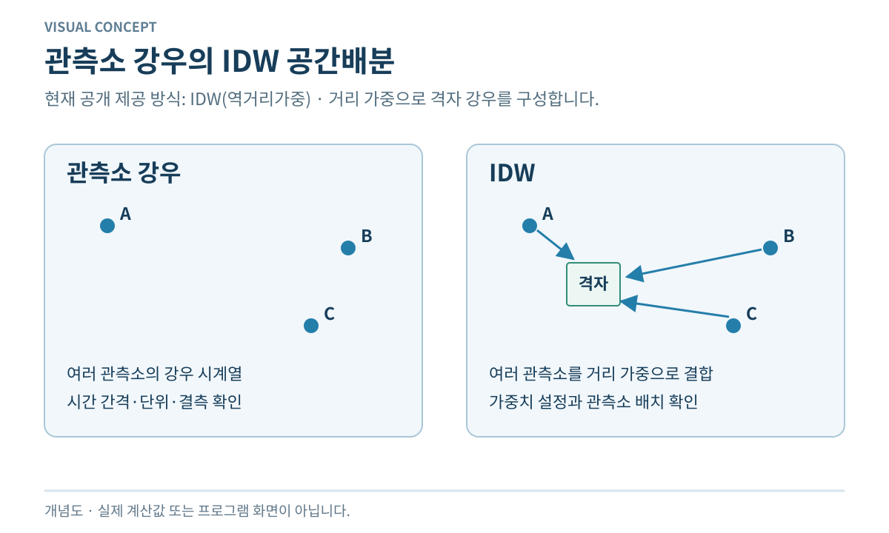
관측소 강우를 IDW 거리 가중으로 계산격자에 배분하는 과정을 설명합니다. 실제 관측값·계산값은 표시하지 않습니다.
가까운 관측소에 더 큰 가중치를 부여하고 가중치 합으로 정규화합니다. 관측소 위치와 격자가 일치하는 경우에는 거리 0의 특이 처리가 필요합니다. 결측 자료와 0 mm 관측은 다른 상태이므로 유효자료 선정 뒤에 공간배분해야 합니다. 현재 안내하는 관측소 강우배분 방식은 IDW입니다.
유효 관측소 강우, 관측소와 격자의 거리, 거리 가중 설정.
Pⱼ: 관측소 강우, dⱼ: 거리, p: 거리 가중 지수. 동일한 단위의 강우자료를 사용합니다.
계산격자별 강우와 공간적인 강우 집중 분포.
이론·자료 근거 K-DRUM: radar rainfall and GIS-based runoff (2012) ↗
관련 이론·수치방법 자세히 보기 →관측소가 없는 지역의 분포는 관측망 배치에 민감합니다. 고도보정과 거리 가중 효과를 구분해 비교합니다.
강우의 공간 분포와 입력 품질을 함께 검토할 때
보정된 강우 입력, 결측·이상 여부와 입력 품질 정보.
강우의 고도 의존성을 반영하는 보정은 공간 입력을 바꾸는 처리입니다. 음수값·결측·이상값과 시간축 오류를 찾는 품질점검은 원자료의 적합성을 판단하는 처리입니다. 두 단계를 분리하여 원자료, 보정 후 자료, 품질 표시를 비교하면 강우량 변화의 원인을 추적할 수 있습니다.
관측소·격자 표고, 원강우, 결측·이상값 규칙, 고도보정 설정.
보정된 강우 입력, 결측·이상 여부와 입력 품질 정보.
이론·자료 근거 K-DRUM: radar rainfall and GIS-based runoff (2012) ↗
관련 이론·수치방법 자세히 보기 →고도보정으로 결측이 자동 해소되지는 않습니다. 적용 유역의 관측 특성과 보정 전후 유역 총량을 함께 확인합니다.
계산에 사용한 강우자료의 빈 구간을 확인할 때
자료 종류별 사용 구간, 누락 시간과 완전성 요약.
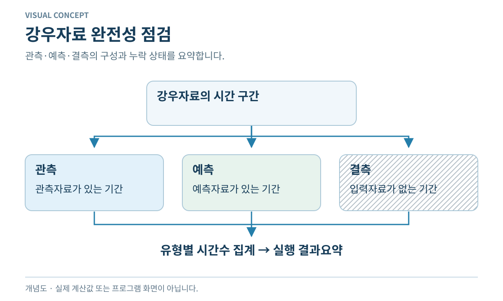
세 유형의 기간을 나누어 집계하는 관계를 보세요. 시간수나 비율은 실제 실행 결과요약에서 확인합니다.
기대되는 자료 시각과 실제 기록을 대조하여 누락 구간을 찾고 관측·예측 자료의 사용 범위를 정리합니다. 총자료 수가 충분해도 연속된 결측이나 특정 호우시각의 누락이 있으면 해당 사상의 해석에 영향을 줍니다. 자료 완전성 집계 자체는 강우를 보간하거나 미래 강우를 생성하지 않습니다.
모의 시작·종료 시각, 자료 종류, 시계열 간격과 유효 여부.
C: 완전성의 설명 지표[%]. 실제 결과요약의 관측·예측 분류와 함께 읽습니다.
자료 종류별 사용 구간, 누락 시간과 완전성 요약.
이론·자료 근거 K-DRUM: current capability status and scope ↗
관련 이론·수치방법 자세히 보기 →모의 종료시각 포함 여부와 중복시각 처리 기준을 동일하게 놓고 집계합니다.
계산을 시작하기 전에 입력자료를 점검할 때
수정이 필요한 오류·경고, 자료 연결 및 실행 준비상태.
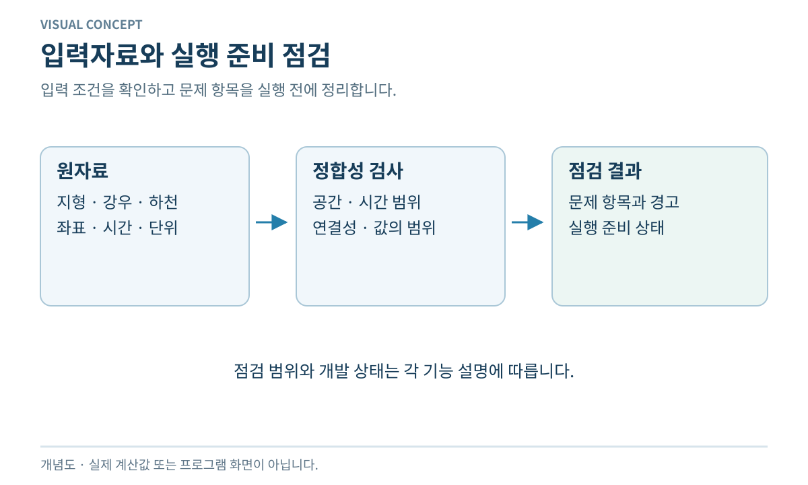
원자료 → 정합성 검사 → 점검 결과의 순서를 보세요. 실제 입력 작성 화면은 아닙니다.
파일 판독 가능 여부와 물리적인 프로젝트 완성도를 구분합니다. 좌표계·격자 배치·식별자 연결·필수 자료·시간 범위를 서로 대조하고, 임시값이나 미연결 요소를 따로 식별합니다. 검사 통과는 실행 준비 상태를 뜻하며 모의 성능평가를 대신하지 않습니다. 입력 편집 화면과 검사 규칙은 사용하는 도구에 따라 달라질 수 있습니다.
격자·하천망·단면·경계·구조물, 제어자료, 강우·기상 시계열.
수정이 필요한 오류·경고, 자료 연결 및 실행 준비상태.
이론·자료 근거 K-DRUM: current capability status and scope ↗
관련 이론·수치방법 자세히 보기 →경고를 무조건 무시하거나 누락 지형을 임의로 채우지 않고, 원자료를 확인한 뒤 다시 점검합니다.
내린 비가 땅속으로 얼마나 스며드는지 해석할 때
구간 침투량·누적침투량, 지표 초과강우와 토양 저장 변화.

지표의 강우, 토양으로 내려가는 침투, 습윤전선의 이동을 구분해 보세요.
토양에 비교적 뚜렷한 습윤전선이 전진한다고 보고 중력과 흡인수두에 의한 침투능을 계산합니다. 누적침투량이 증가하면 흡인 효과의 상대적 비중이 줄어듭니다. 실제 침투량은 침투능뿐 아니라 공급된 물의 양으로 제한되며, 침투수는 토양 저장과 이후 층별 유출 계산으로 연결됩니다.
투수계수, 습윤전선 흡인수두, 초기·포화 함수율, 강우와 지표 가용수.
단순 담수조건 설명식: f_c·Kₛ [길이/시간], ψf·F [길이], θ [체적함수율]. 실제 계산은 가용수·초기조건을 함께 처리합니다.
구간 침투량·누적침투량, 지표 초과강우와 토양 저장 변화.
이론·자료 근거 USACE HEC-HMS: Green and Ampt loss model ↗ · K-DRUM: radar rainfall and GIS-based runoff (2012) ↗
관련 이론·수치방법 자세히 보기 →서로 다른 단위의 투수계수와 시간간격을 섞지 않습니다. 포화·불포화 조건 및 불투수면 설정을 함께 확인합니다.
비가 지표와 토양을 거쳐 유출되는 과정을 볼 때
지표·지표하 유출, 층별 저장상태, 하천으로 전달되는 유입.

지표와 토양층의 유출 화살표가 하천 쪽으로 모이는 경로를 보세요.
단위 격자는 지표와 다층 저장으로 구성됩니다. 유입된 물은 층별 저장을 갱신하고, 층간 이동과 사면 방향의 흐름으로 분배됩니다. 빠른 지표 반응과 느린 토양·심부 저장 반응이 하천유입의 시간 차이를 만듭니다. 유출 생성량과 하류에서 관측하는 유량은 전달과정을 거친 서로 다른 양입니다.
침투·강우·융설수, A/B/C/D층 상태, 토양·토심·경사 및 유출 연결.
같은 구간·체적 단위의 층별 보존식. Iₖ와 Oₖ에는 층간·측방 이동이 포함됩니다.
지표·지표하 유출, 층별 저장상태, 하천으로 전달되는 유입.
이론·자료 근거 K-DRUM: radar rainfall and GIS-based runoff (2012) ↗
관련 이론·수치방법 자세히 보기 →층 사이 이동은 내부 교환이므로 유역 전체 유출에 중복 합산하지 않습니다.
여러 강우사상과 계절을 이어서 모의할 때
장기 유량·수문상태 시계열, 기간별 물수지와 저장 변화.
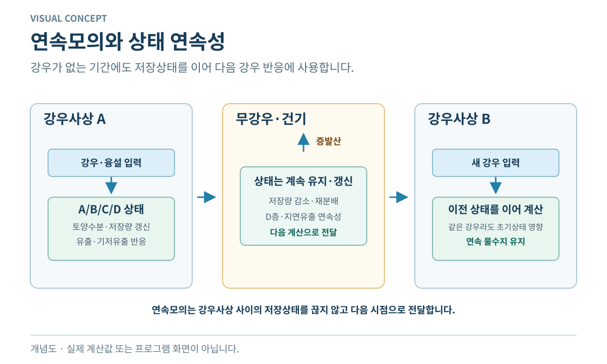
비가 오는 시기와 마른 시기 사이에도 토양·저장상태가 이어지는 점을 보세요.
강우사상 사이에도 증발산과 저장·유출을 계산하여 다음 사상의 선행조건을 갱신합니다. 계절별 적설·융설과 토양수분의 변화가 홍수기와 갈수기 반응에 함께 작용합니다. 초기조건의 영향이 큰 기간은 준비운전 또는 상태 재사용 범위를 명시하여 분석기간과 구분합니다.
연속 강우·기상 자료, 초기 저장, 토양·식생 조건, 모의기간.
저장상태를 다음 시점으로 전달하는 연속모의의 보존 개념입니다.
장기 유량·수문상태 시계열, 기간별 물수지와 저장 변화.
이론·자료 근거 K-DRUM: long-term snowmelt application (2013) ↗
관련 이론·수치방법 자세히 보기 →여러 해의 증발산·물수지를 비교할 때 분석기간, 자료 결측, 초기·최종 저장을 통일합니다.
비가 오지 않는 동안 토양수분의 변화를 볼 때
실제 증발산, 층별 수분 감소와 연속모의 토양수분.

토양에 저장된 물이 식생과 지표를 거쳐 대기로 이동하는 부분을 보세요.
기준 증발산 수요를 식생과 뿌리 영역에 연결한 뒤 층별로 물을 배분·차감합니다. 뿌리 영역에 물이 부족하면 실제 증발산은 수요보다 작아지며 토양수분도 그만큼 감소합니다. 증발산은 수문 계산의 외부 손실항이고 토양층 사이의 재분배와 구분됩니다.
기상자료, 토지피복·계절별 LAI, 뿌리 깊이와 층별 수분상태.
가용수 제한의 설명식. ETₐ: 실제 증발산률, ETd: 수요, Wavailable: 같은 면적 기준의 가용 수량.
실제 증발산, 층별 수분 감소와 연속모의 토양수분.
이론·자료 근거 FAO-56: evaporative demand and crop evapotranspiration ↗ · K-DRUM: long-term snowmelt application (2013) ↗
관련 이론·수치방법 자세히 보기 →기상 수요식과 실제 수분 제한을 구분합니다. 물이 없는 층에서 증발산을 무제한 차감하지 않는지 물수지로 확인합니다.
눈이 쌓였다 녹는 시기의 유출을 해석할 때
적설수량, 융설수 공급량과 계절별 유출 기여.
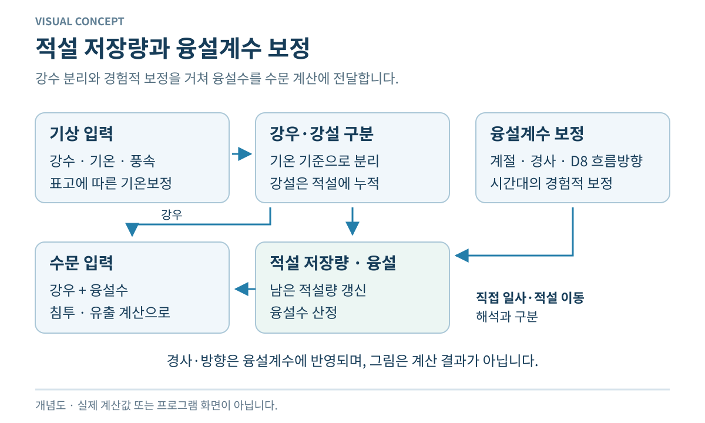
강우·강설 구분, 융설계수 보정, 적설 저장량과 융설수의 연결을 보세요. 지형 조건은 융설계수에 반영됩니다.
기온에 따라 강우와 강설을 구분하고 강설을 적설수량으로 저장합니다. 표고에 따른 기온 차이와 경사·방향·시간대 보정, 풍속과 강우 영향을 경험적 융설 계산에 반영합니다. 융설수는 적설 저장에서 차감되어 침투·유출에 공급됩니다. 이는 일사 에너지수지를 직접 푸는 적설모형이나 눈의 사면 이동 계산과 다릅니다.
기온·표고·강우·풍속, 경사·D8 방향, 시간대와 적설수량.
SWE·Psnow·M을 동일 구간의 물환산 깊이로 집계한 설명식이며, M의 실제 경험식과 구분합니다.
적설수량, 융설수 공급량과 계절별 유출 기여.
이론·자료 근거 K-DRUM: long-term snowmelt application (2013) ↗
관련 이론·수치방법 자세히 보기 →적설수량(mm 물깊이)과 적설심(cm 눈깊이)을 혼동하지 않습니다. 융설량은 가용 적설 저장을 넘을 수 없습니다.
초기 토양·유출 상태를 준비하고 영향을 확인할 때
조정된 시작 상태, 반복 이력과 목표유량 오차.
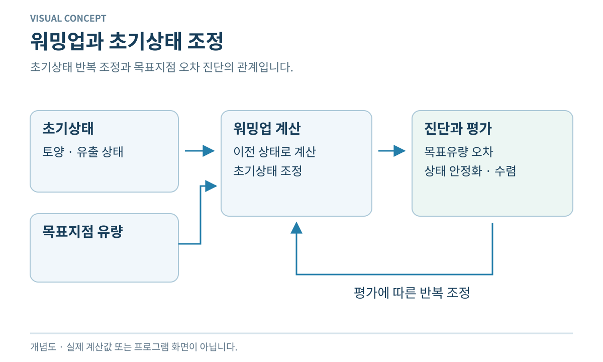
초기상태 조정 → 목표지점 평가 → 반복 조정의 연결을 보세요. 저장 상태를 단순히 복원하는 과정과 다릅니다.
초기상태를 바꾸며 모형을 반복하고 목표유량 오차와 상태 변화가 설정한 기준에 들어오는지 확인합니다. 매개변수의 최적 조합을 찾는 보정과 달리, 준비운전은 선택한 매개변수에서 시작 상태를 정하는 과정입니다. 재사용 가능한 수문상태가 있으면 일부 준비 계산을 줄일 수 있습니다.
초기 저장·유량, 목표지점 유량, 반복·종료 조건.
eQ [m³/s]는 초기유량 차이의 예시입니다. 종료 판단에는 실제 설정의 절대·상대 기준을 사용합니다.
조정된 시작 상태, 반복 이력과 목표유량 오차.
이론·자료 근거 K-DRUM: current capability status and scope ↗
관련 이론·수치방법 자세히 보기 →목표유량, 관측 시점과 모의 시작시각의 의미를 맞추고, 준비기간 결과를 분석기간 통계와 구분합니다.
이전 계산에서 저장한 상태를 이어서 사용할 때
복원된 모의상태, 재시작 실행과 연속 계산 비교 결과.
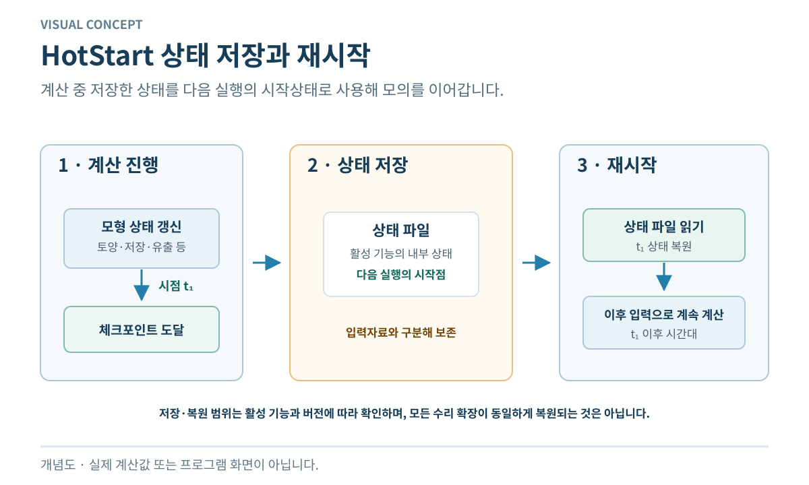
저장된 상태가 다음 계산의 시작점으로 전달되는 연결을 보세요.
재시작은 저장 시점의 상태를 복원하여 이후 구간을 계산하는 기능입니다. 수문 준비상태만 재사용하는 캐시는 준비운전을 줄이지만 적설·댐·하천 등 모든 상태를 동일하게 이어받는 전체 재시작과 같지 않습니다. 복원 대상과 시작시각을 확인하고 불일치한 상태는 무리하게 혼용하지 않습니다.
상태 파일, 격자·하천·시간 정보, 모형·상태 형식의 호환성.
X는 해당 형식이 저장·복원하는 상태 묶음입니다. 저장하지 않은 변수를 복원했다고 가정하지 않습니다.
복원된 모의상태, 재시작 실행과 연속 계산 비교 결과.
이론·자료 근거 K-DRUM: current capability status and scope ↗
관련 이론·수치방법 자세히 보기 →연속 실행과 재시작 실행을 같은 조건에서 비교하여 저장량·유량·시간축의 일치성을 확인합니다.
강우 뒤에도 오래 이어지는 저유량을 검토할 때
심부 저장 변화, 지연 복귀량·기저유출 기여, 심부손실.
A/B/C/D 다층 구조와 하천 기여를 먼저 보고, D층이 기존 지하수 저장층이라는 점과 지연 복귀·선택적 심부 손실을 구분해 보세요.
D층은 원래 다층 유출 구조에 포함된 저장층입니다. 현행 확장 경로는 저장량에 따른 지연 복귀와 선택적인 심부손실을 가용 저장량 이내로 계산하여 장기 저유량 반응을 표현합니다. 상부 토양·하천과의 교환은 내부 이동이며, 영역 밖 심부손실은 외부 손실로 따로 집계합니다. 공간적인 대수층 수두장을 푸는 지하수유동모형과는 해석 차원이 다릅니다.
D층 저장, 상부층 유입, 지연 복귀·심부손실 설정, 하류 수위 조건.
D층의 구간 체적 수지 설명식. 내부 복귀량을 유역 외부 유출과 중복 집계하지 않습니다.
심부 저장 변화, 지연 복귀량·기저유출 기여, 심부손실.
이론·자료 근거 K-DRUM: long-term snowmelt application (2013) ↗
관련 이론·수치방법 자세히 보기 →기존 D층을 새로 추가한 기능으로 설명하지 않습니다. 감수곡선과 장기 물수지를 함께 사용해 유역별 계수를 검토합니다.
사면과 하천의 경사 차이를 계산에 반영할 때
영역별 경사 입력, 유출 속도와 하도 전달 반응.
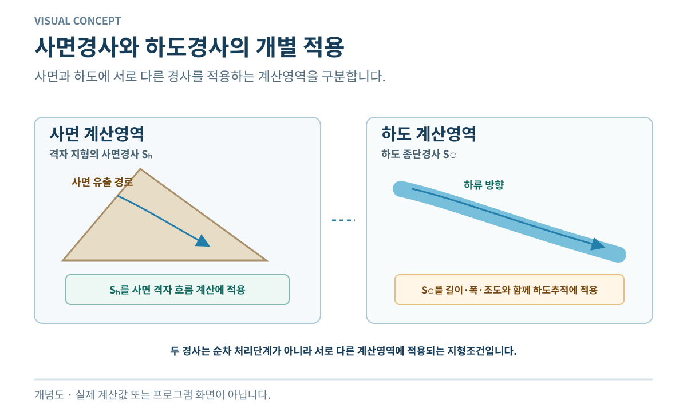
사면과 하도는 순차 처리단계가 아니라 서로 다른 계산영역입니다. 사면경사 Sₕ와 하도 종단경사 S𝚌가 각각 어디에 적용되는지 보세요.
격자 평균 지형경사를 하천 바닥 경사와 같은 값으로 사용하지 않고 각 계산 영역에 맞는 값을 전달합니다. 사면의 빠른 지표유출과 하도 전달시간은 서로 다른 기하·조도 조건을 가집니다. 경사 보완은 흐름방향의 연결성과 구분하여 확인하고, 수리해석의 수면경사와도 구분합니다.
사면 경사, 하도 종단경사, 흐름방향과 하도 길이.
Δz·L [m], S [m/m]. 사면과 하도에 각각 해당 기하를 사용합니다.
영역별 경사 입력, 유출 속도와 하도 전달 반응.
이론·자료 근거 USACE HEC-HMS: Kinematic-wave channel routing ↗
관련 이론·수치방법 자세히 보기 →표고 차이/거리로 계산한 경사가 무차원인지, 각도·백분율인지 구분합니다.
사면에서 생긴 유출이 하류로 이동하는 과정을 볼 때
격자별 사면 유출·저장과 하천 측방유입.
연속식과 흐름–저장 관계를 결합하여 상류·국소 유입과 하류 유출을 보존형으로 갱신합니다. 지배적인 중력과 마찰의 평형으로 유출량을 정하기 때문에 동역학파처럼 배수위 영향을 양방향 전파시키는 방식은 아닙니다. 고정된 흐름방향과 토양층 반응을 함께 사용하여 사면 기여를 하천까지 전달합니다.
사면 유출, 격자 연결, 경사·길이·조도와 저장상태.
운동파의 대표 연속식·폐합관계. A [m²], Q [m³/s], ql [m²/s]; α,m은 형상·조도 조건을 나타냅니다.
격자별 사면 유출·저장과 하천 측방유입.
이론·자료 근거 USACE HEC-HMS: Kinematic-wave channel routing ↗ · K-DRUM: radar rainfall and GIS-based runoff (2012) ↗
관련 이론·수치방법 자세히 보기 →침투에 의해 정해진 유출 생성과 운동파 전달을 구분하고, 완만한 배수 영향 구간의 수리해석 필요성을 검토합니다.
유역에서 모인 물이 하도를 따라 흐르는 과정을 볼 때
하도 유량과 저장, 유역 출구·소유역 지점의 수문곡선.
하도 구간의 저장량 변화가 유입과 유출의 차이와 일치하도록 계산합니다. 사면유출과 상류 하도 유량을 받아 비선형 저장–유출 관계를 풀고 정해진 연결을 따라 전달합니다. 하도 운동파는 빠른 유량 추적에 적합하며, 실측 단면의 수위·배수위·역류는 별도의 1D 수리 계산 경로로 다룹니다.
상류 유량·측방유입, 하도 폭·길이·경사·조도, 흐름방향.
구간 저장체적 V [m³], 유량 Q [m³/s]. 하류로 전달되는 물을 단계 간에 중복 소비하지 않습니다.
하도 유량과 저장, 유역 출구·소유역 지점의 수문곡선.
이론·자료 근거 USACE HEC-HMS: Kinematic-wave channel routing ↗ · K-DRUM: radar rainfall and GIS-based runoff (2012) ↗
관련 이론·수치방법 자세히 보기 →같은 유량에 서로 다른 수위가 가능한 배수 영향 구간은 단일 운동파 수위 관계로 설명하지 않습니다.
하천에서 지하 저장층으로 이동하는 물을 검토할 때
하천 침투량, D층 저장 증가와 교환 물수지.
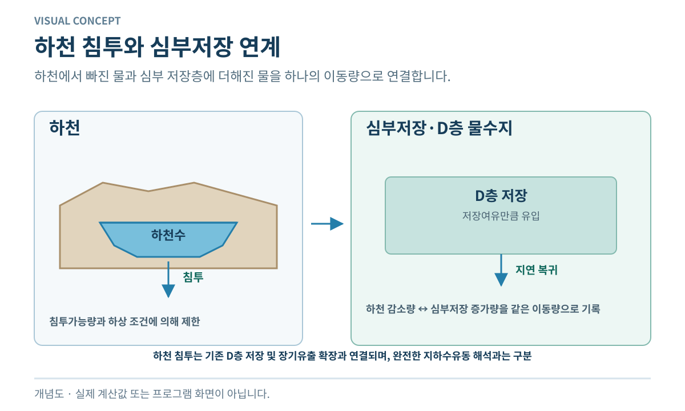
하천에서 빠진 물과 D층 저장 증가를 같은 이동량으로 대응시키고, 이후 지연 복귀와 구분해 보세요.
하천 침투량은 침투가능량만으로 정하지 않고 공급 가능한 하천수와 수용층의 저장여유를 함께 제한합니다. 하천에서 빠진 물을 D층 증가량으로 대응시켜 내부 이동을 추적합니다. 외부 손실로 취급하는 경로와 내부 저장으로 전달하는 경로를 구분하면 장기유출의 감수·기저유출을 일관되게 해석할 수 있습니다.
하천 수량·하상 침투특성, D층 상태와 저장여유, 시간간격.
모두 같은 계산구간의 체적[m³]으로 비교한 제한 개념입니다.
하천 침투량, D층 저장 증가와 교환 물수지.
이론·자료 근거 K-DRUM: current capability status and scope ↗
관련 이론·수치방법 자세히 보기 →모의영역에 남아 있는 물과 영역 밖 손실을 구분하고, 내부 이동을 유역 전체 손실에 다시 더하지 않습니다.
지형자료만으로 하천 바닥 형상이 충분하지 않을 때
보완 하상·수리 입력 지형과 단면–DEM 정합 점검자료.
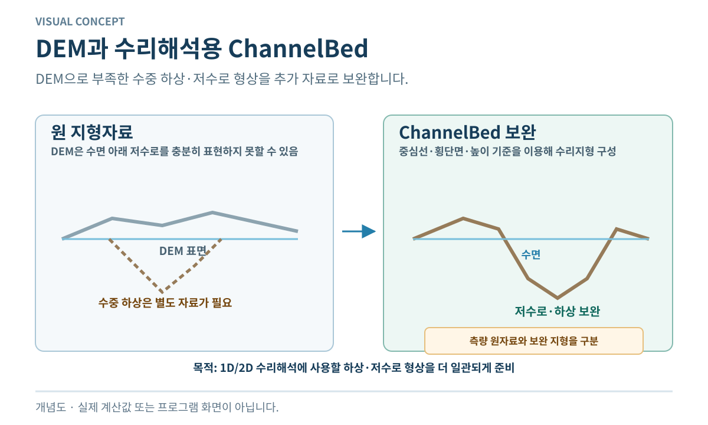
DEM 표면과 수중 하상·저수로의 차이, 그리고 추가 자료로 보완된 수리해석용 지형을 나란히 비교해 보세요.
지표 DEM은 수면 아래 하상을 충분히 포함하지 않을 수 있습니다. 추가 단면의 상대 형상과 종단 하상고를 구분해 배치하고 주변 지형·제방과 정합시킵니다. 1D 단면 형상 보존과 2D 범람 지형의 연결은 서로 다른 작업이며, 누락된 수중 지형을 고해상도 DEM만으로 자동 복원했다고 보지 않습니다.
DEM, 하천 중심선, 실측·설계 횡단면, 하상고·좌우안 위치·표고 기준.
η: 수면표고[m], zbed: 하상고[m], h: 수심[m]. 서로 다른 수직기준을 혼용하지 않습니다.
보완 하상·수리 입력 지형과 단면–DEM 정합 점검자료.
이론·자료 근거 USACE: 1D unsteady-flow hydrodynamics ↗
관련 이론·수치방법 자세히 보기 →수위·단면·DEM의 수직기준을 맞추고 실제 측량자료와 보완·가정 구간을 구분해 기록합니다.
계산에서 물의 유입·유출과 저장 변화가 맞는지 볼 때
체적·등가수심별 수지항, 잔차와 상대오차, 내부 이동 설명.
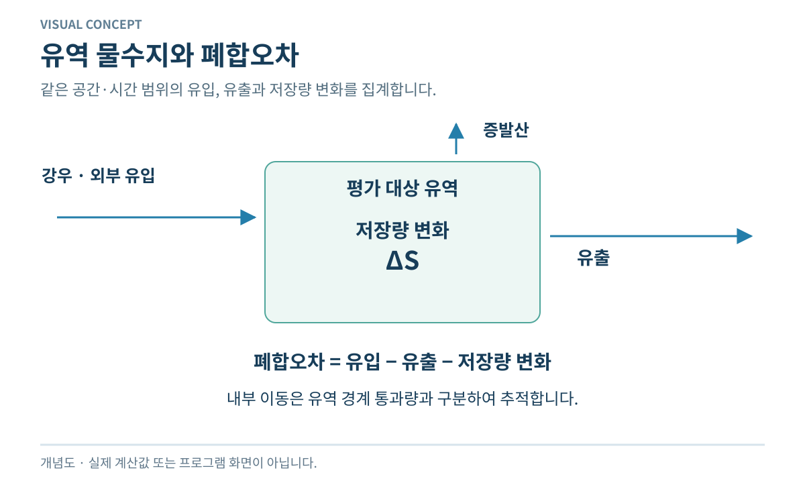
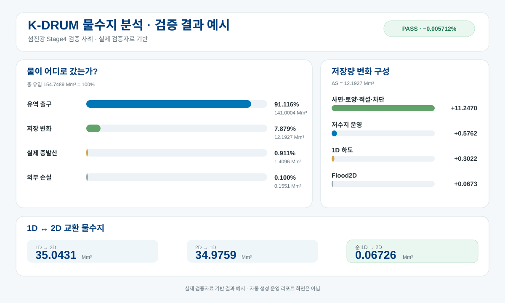
유역 경계를 넘는 유입·유출과 내부 저장량 변화를 구분해 보세요.
각 계산과정의 체적을 같은 기간과 영역으로 집계하여 들어온 물의 행방을 설명합니다. 토양·적설·하천·저수지 등 저장 변화와 내부 이동을 함께 추적하고, 경계 밖 유출·손실만 전체 외부 항에 반영합니다. 잔차가 작다는 것은 물의 보존 일관성을 보여주며 수위·유량 예측 정확도와는 다른 평가입니다.
강우·외부유입·출구유출·증발산·심부손실, 초기·최종 저장.
모든 항 [m³]. 내부 교환은 전체 영역 합계에서 상쇄됩니다.
체적·등가수심별 수지항, 잔차와 상대오차, 내부 이동 설명.
이론·자료 근거 Hodges (2019): conservative finite-volume Saint-Venant forms ↗
관련 이론·수치방법 자세히 보기 →먼저 기간과 계산 영역을 정한 뒤, 누적량을 같은 단위로 맞춥니다. 유량(m³/s)은 시간에 대해 적분해 체적(m³)으로, 수심(mm)은 해당 면적으로 환산해야 비교할 수 있습니다.
| 항목 | 포함 내용 | 해석 |
|---|---|---|
| 유입 | 강우와 외부에서 들어온 물 | 분석 영역이 받은 전체 물의 양 |
| 유출·손실 | 유출·증발산·영역 밖으로 나간 손실 | 경계를 나간 항만 합산하고 내부 이동은 구분 |
| 저장 변화 | 종료 저장량 − 시작 저장량 | 토양·하천 등에 남거나 방출된 물 |
잔차 = 누적 유입 − 누적 유출·손실 − 저장 변화
수지를 읽기 위한 공통 정의입니다. 실제 리포트의 포함 항목과 부호를 먼저 확인합니다. 상대오차(%)는 분모가 강우량인지 총유입량인지에 따라 의미가 달라집니다.
유량은 시간 적분하고 수심은 면적을 곱합니다. 상대오차 분모와 수리·수문 저장 집계범위를 먼저 확인합니다.
하천과 범람원 사이에 오간 물의 양을 점검할 때
1D→2D·2D→1D 누적체적, 순교환량과 양 영역 교환 잔차.
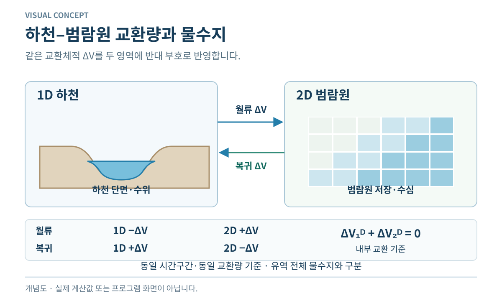
같은 교환량이 두 영역에 반대 부호로 기록되는 관계입니다. 월류와 복귀를 나누어 읽으세요.
1D에서 빠진 교환량은 2D 유입으로, 2D 복귀량은 1D 유입으로 반영합니다. 내부 반복에서 계산한 시험 교환과 최종 채택된 교환을 분리해 중복 집계를 막습니다. 양방향 누적 총량과 순교환량을 함께 보면 홍수 확산과 복귀를 구분할 수 있습니다. 교환량 보존은 기능의 핵심이며 전체 유역 물수지나 운동량 보존과 동일한 검사는 아닙니다.
확정된 계산구간의 교환유량·체적, 하천·범람원 저장, 교환 연결정보.
1D→2D를 Vex>0으로 정의한 교환 보존식. 복귀 시 부호가 바뀝니다.
1D→2D·2D→1D 누적체적, 순교환량과 양 영역 교환 잔차.
이론·자료 근거 Hodges (2019): conservative finite-volume Saint-Venant forms ↗ · Bates, Horritt & Fewtrell (2010): local-inertial formulation ↗
관련 이론·수치방법 자세히 보기 →연계 시간구간과 부호·단위를 일치시키고, 한 영역의 수위 오차가 교환수지 오차와 같은 의미인지 구분합니다.
실행 조건과 경고를 한곳에서 검토할 때
실행 요약, 물수지·자료 품질·출력상태·시간 정보.
어떤 설정으로 어떤 기간을 계산했는지와 결과의 생성상태를 함께 기록합니다. 준비운전·본계산·출력 시간을 구분하면 실행시간 변동 원인을 찾을 수 있습니다. 경고·부분 결과·정상 완료 여부를 수문곡선 옆에서 확인하여 결과 파일이 있다는 사실만으로 전체 실행 성공을 판단하지 않도록 합니다.
실행 모드·버전, 모의기간, 자료점검·초기화·계산·출력 상태.
실행 요약, 물수지·자료 품질·출력상태·시간 정보.
이론·자료 근거 K-DRUM: current capability status and scope ↗
관련 이론·수치방법 자세히 보기 →실제 총 소요시간과 반복·실패 시도가 포함된 개별 계산기 누적시간을 같은 지표로 비교하지 않습니다.
전체 유역 안에서 지역별 차이를 비교할 때
소유역별 요약, 목표지점 수문곡선과 기여량 비교.
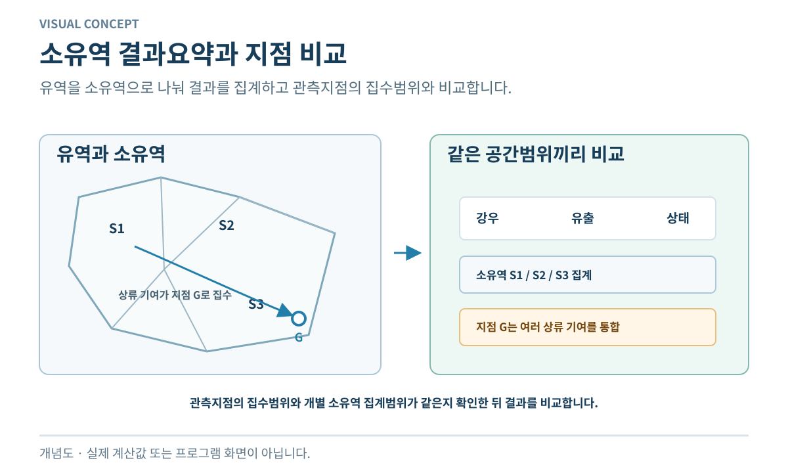
S1·S2·S3 소유역 집계와 지점 G의 집수범위를 구분해 보세요. 지점 G는 여러 상류 기여를 통합할 수 있습니다.
개별 소유역의 국소 발생량과 상류를 포함한 누적 출구유량을 구분합니다. 영역별 면적 가중과 연결성을 적용하여 강우·유출 기여를 정리하면 전체 출구 결과만으로 놓치는 공간적인 차이를 찾을 수 있습니다. 다지점 보고 기능은 각 소유역의 매개변수를 동시에 자동 보정한다는 의미가 아닙니다.
소유역 구분·연결, 평가 지점, 강우·유출·저장 등 집계 결과.
면적 가중 평균의 예시입니다. 유량 누적은 별도의 하천 연결관계를 따릅니다.
소유역별 요약, 목표지점 수문곡선과 기여량 비교.
이론·자료 근거 K-DRUM: radar rainfall and GIS-based runoff (2012) ↗
관련 이론·수치방법 자세히 보기 →관측소의 집수면적과 집계한 소유역 범위를 맞추고, 상류 누적량을 국소 발생량과 중복 합산하지 않습니다.
관측유량과 비교해 매개변수 조합을 평가할 때
후보 조합별 성능, 선택 매개변수와 관측·계산 비교.
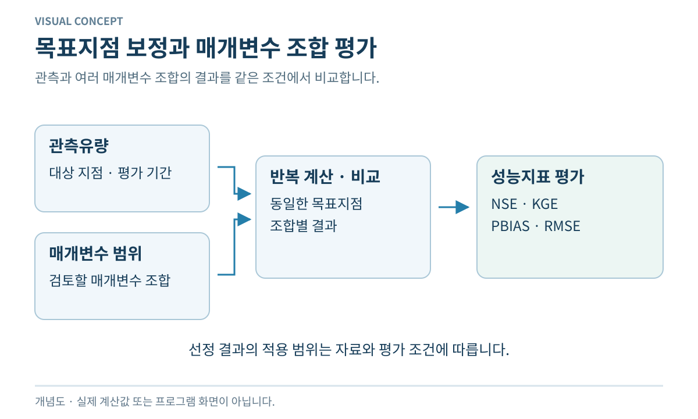
관측자료와 여러 매개변수 조합이 같은 평가 단계로 모이는 흐름을 보세요. 최적화 성능을 입증한 수치 예시는 아닙니다.
격자탐색이나 일요인 변화로 후보 매개변수의 모의반응을 비교합니다. NSE·KGE·PBIAS·RMSE는 각각 변동 재현·상관 및 편향·총량 편향·오차 크기 등 다른 측면을 보여줍니다. 보정에 사용하지 않은 기간으로 확인하고 매개변수의 물리적 범위를 제한하여 한 사상에 과적합되는 것을 줄입니다.
관측 유량·수위, 평가기간, 조정 매개변수 범위·조합, 목적지표.
NSE는 무차원이며 관측 분산이 0이면 정의되지 않습니다. 결측 제외와 시간 정렬을 먼저 수행합니다.
후보 조합별 성능, 선택 매개변수와 관측·계산 비교.
이론·자료 근거 Nash & Sutcliffe (1970): river-flow forecasting and model evaluation ↗
관련 이론·수치방법 자세히 보기 →단일 지표의 최대값만으로 첨두·도달시간·갈수량이 모두 개선됐다고 판단하지 않습니다.
어느 소유역과 지점을 우선 보정할지 검토할 때
지점별 성능, 보정 전후의 지역 반응과 적용 매개변수 범위.
어느 소유역의 반응이 목표지점 차이에 기여하는지 먼저 검토하고 선택된 매개변수 조합을 평가합니다. 보정 후에는 다른 지점과 기간의 반응도 비교합니다. 하류 지점의 오차를 상류 특정 소유역의 매개변수만으로 단정하지 않으며, 매개변수 적용 영역과 실제 소유역 연결을 맞춥니다.
소유역·목표지점 연결, 관측자료, 후보 매개변수와 지역별 결과.
지점별 성능, 보정 전후의 지역 반응과 적용 매개변수 범위.
이론·자료 근거 Nash & Sutcliffe (1970): river-flow forecasting and model evaluation ↗
관련 이론·수치방법 자세히 보기 →소유역 결과 보고, 선택 지점 보정, 모든 지점 동시 최적화는 서로 다른 기능입니다.
결과 파일이 빠짐없이 정상적으로 작성됐는지 볼 때
출력 준비상태, 누락·불완전 기록과 검토 가능한 결과기간.
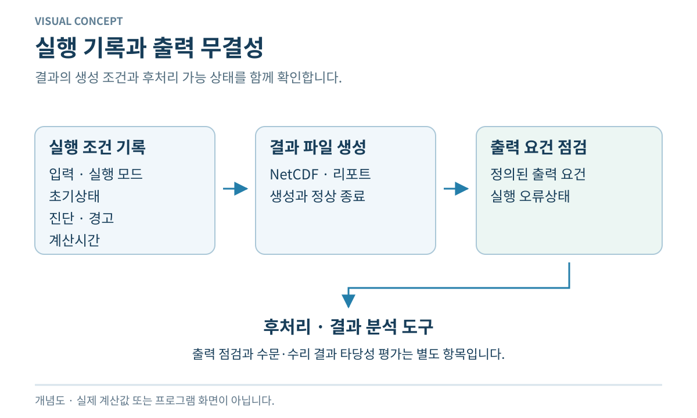
결과 생성 이후 출력 요건을 점검하고 결과 분석으로 전달하는 순서를 보세요.
파일의 존재만 확인하지 않고 필수 변수·차원·유효 값과 기록 범위를 검사합니다. 진행·중단된 계산의 부분 결과와 정상 종료 후 확정된 결과를 구분하여 후속 분석이 잘못된 기간을 읽지 않도록 합니다. 파일 무결성 점검은 관측자료에 대한 물리적 정확도 검증과 다른 목적입니다.
출력 파일·메타데이터, 요구 변수, 마지막 저장시각과 종료상태.
출력 준비상태, 누락·불완전 기록과 검토 가능한 결과기간.
이론·자료 근거 Unidata: NetCDF data model ↗
관련 이론·수치방법 자세히 보기 →마지막 기록시각, 단위·좌표·시간 기준, 비정상 값과 정상 마감 여부를 함께 확인합니다.
하천망의 수위와 유량을 함께 해석하는 방법을 검토할 때
하천망 수위·유량·유속, 종단·횡단 수리상태와 저장량.
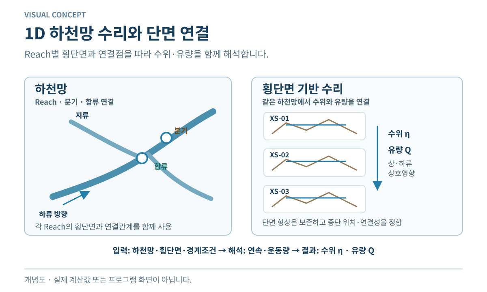
하천망의 Reach, 분기·합류와 횡단면이 어떻게 연결되고 같은 해석에서 수위 η와 유량 Q가 이어지는지 보세요.
1D 하천수리 기능은 개발 완료되었습니다. 국부관성 경로와 이류 운동량을 포함하는 동역학파 경로를 선택 목적에 맞춰 구분합니다. 동역학파는 단면 수리량과 공유 경계의 보존형 플럭스를 하천망에 연결하며, 현재 음해 계산 경로는 후진 Euler·TR-BDF2와 비선형 반복을 사용합니다. 실측 단면의 상대 형상을 유지하면서 종단 하상고에 배치하므로 단순 직사각형 하도로 일괄 치환하는 방식과 다릅니다.
횡단면 X–Z, 종단 하상고·하천 연결, 조도, 상류·측방 유입과 하류 수위·구조물.
A [m²], Q [m³/s], I₁: 단면 정수압 적분[m³], ql [m²/s]. 두 번째 식은 비등단면·마찰·측방항을 묶어 쓴 보존형 개요입니다. Sf는 무차원 마찰경사이며 Sgeom·Slat는 단위 길이당 운동량 소스입니다.
하천망 수위·유량·유속, 종단·횡단 수리상태와 저장량.
이론·자료 근거 USACE: 1D unsteady-flow hydrodynamics ↗ · Hodges (2019): conservative finite-volume Saint-Venant forms ↗
관련 이론·수치방법 자세히 보기 →배수위·역류·급변류의 표현은 선택한 방정식과 경계조건에 달려 있습니다. 실제 유역 적용은 단면·표고 기준과 관측수위·유량으로 확인합니다.
물이 갈라지거나 합쳐지는 연결부를 해석할 때
접합부 수위·저장, 분기·합류 유량 및 연결 구간의 수리 반응.
접합부를 여러 하도 구간의 연결점으로 다루고 같은 경계의 유량을 일관된 방향으로 전달합니다. 접합부 저장을 사용하는 경우 유입과 유출의 차이는 수위·저장 변화에 반영됩니다. 동역학파 경로의 접합부 수리·운동량 처리는 단순한 유량 합산과 구분되며, 같은 유입이 하도와 접합부에 중복 들어가지 않도록 연결을 확인합니다.
하천망 위상, 접합부 연결·기하, 연결 하도의 수위·유량과 외부 유입.
Vj [m³], Q [m³/s]. 접합부 질량보존식이며 운동량 조건은 선택한 수리 경로가 추가로 처리합니다.
접합부 수위·저장, 분기·합류 유량 및 연결 구간의 수리 반응.
이론·자료 근거 USACE: 1D unsteady-flow hydrodynamics ↗ · Hodges (2019): conservative finite-volume Saint-Venant forms ↗
관련 이론·수치방법 자세히 보기 →접합부의 연결 방향·표고·저장 기하가 맞는지 확인하고, 역류가 가능한 조건에서는 부호를 포함해 비교합니다.
게이트·월류 구조물이 흐름에 미치는 영향을 검토할 때
구조물 통과유량, 상하류 수위 반응과 수지항.
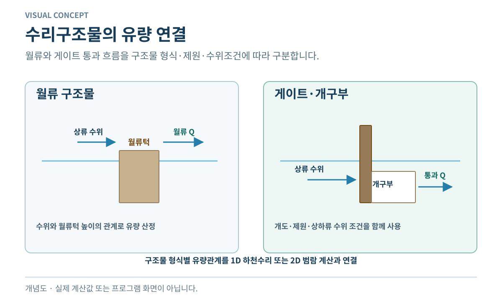
월류 구조물과 게이트·개구부를 나누어 보고, 각 경우 유량 Q가 수위와 구조물 제원에 어떻게 연결되는지 보세요.
마루를 넘는 월류와 개구부 통과 흐름은 서로 다른 지배조건을 사용합니다. 상하류 수두차와 잠수 여부, 개구 상태를 고려해 유량을 정하고 상류 손실·하류 유입으로 대응시킵니다. 구조물의 흐름 계산과 언제 얼마나 개방할지 정하는 운영규칙을 분리하면 수리조건과 정책조건의 영향을 구분할 수 있습니다.
구조물 위치·형상·마루고·개구, 상하류 수위와 방류 관계.
월류와 개구부의 대표 수리 관계이며 실제 계수·잠수 보정·개구 규칙은 구조물 설정에 따릅니다.
구조물 통과유량, 상하류 수위 반응과 수지항.
이론·자료 근거 USACE: hydraulic structures and flow equations ↗
관련 이론·수치방법 자세히 보기 →마루고·저수위의 표고 기준과 자유/잠수 조건, 역방향 지원 범위를 실제 선택 방식에 맞춥니다.
저수지 운영규칙에 따른 저장과 방류를 검토할 때
저수위·저류량·방류량 시계열, 제약 충족 여부와 하류 영향.
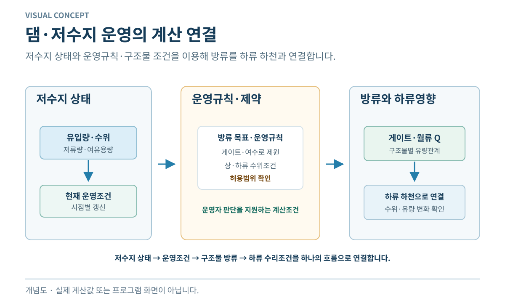
저수지의 유입·방류와 하류 연결을 보세요. 운영규칙이나 권장 방류량을 제시한 그림은 아닙니다.
저수량을 유입과 방류로 갱신하고 H–V 관계를 통해 수위로 변환합니다. 운영 규칙은 목표수위·가용 방류능력·최소유량과 방류 증가·감소 한도를 고려합니다. 연계 계산에서는 같은 구간의 저수지 방류와 하류 하천의 유입을 일치시키며, 예측 운영·다수 댐 시나리오와는 역할을 구분합니다.
유입량, 초기 수위·저류량, H–V 관계, 방류능력·운영규칙·환경유량.
V [m³], Q [m³/s], H [m]. 초기 수위와 초기 저장량의 대응이 물수지 기준이 됩니다.
저수위·저류량·방류량 시계열, 제약 충족 여부와 하류 영향.
이론·자료 근거 USACE HEC-HMS: reservoir routing ↗
관련 이론·수치방법 자세히 보기 →방류 변화율의 단위 (m³/s)/h와 계산시간을 맞추고, 운영 모의 결과를 실제 시설의 자동 제어 명령으로 사용하지 않습니다.
예측 유입량을 활용한 방류 대안을 검토할 때
사전방류 후보와 저수위·하류 유량 변화, 제약 평가.
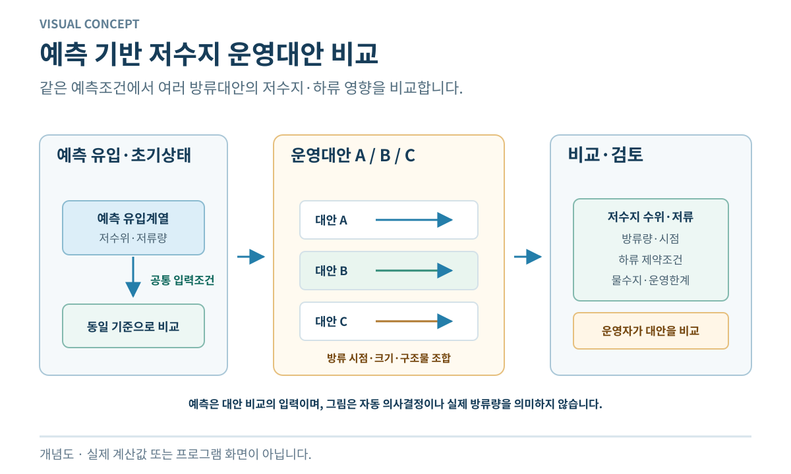
예측 유입, 저수지와 하류 평가구간을 함께 보세요. 방류 대안 간 차이를 검토하는 개념입니다.
현재 상태에서 예측기간의 유입을 적용하여 후보 방류안의 저수위·방류량·하류 영향을 계산합니다. 홍수조절 여유 확보와 하류 제약을 함께 검토하되 예측 강우·유입 오차도 시나리오 조건으로 다룹니다. 결정지원용 대안 검토이며, 예측이 정확하거나 후보안이 모든 조건에서 최적이라는 보장은 하지 않습니다.
현재 저수상태, 예측 유입기간, 방류능력·목표수위, 하류 허용조건.
사전방류 후보와 저수위·하류 유량 변화, 제약 평가.
이론·자료 근거 USACE HEC-HMS: reservoir routing ↗
관련 이론·수치방법 자세히 보기 →동일 초기상태·예측기간으로 대안을 비교하고 예측 수정 시 판단도 다시 수행합니다.
여러 댐의 운영 대안을 같은 기준으로 비교할 때
대안별 방류·저수위·목표지점 유량, 제약 및 비교 지표.
운영 대안별 저수지 상태와 방류를 계산하고 하류 도달시간과 중첩을 고려해 목표지점 반응을 평가합니다. 대안마다 동일 강우·초기조건을 유지해야 운영 변경의 효과를 분리할 수 있습니다. 시나리오 평가 결과는 원 모의의 정식 산출물과 구분하여 관리하며, 단일 댐 개선이 다른 지점의 악화로 이어지는지도 확인합니다.
댐 네트워크, 기준·대안 운영규칙, 초기 저장, 유입과 평가 지점.
대안별 방류·저수위·목표지점 유량, 제약 및 비교 지표.
이론·자료 근거 USACE HEC-HMS: reservoir routing ↗ · USACE HEC-HMS: Kinematic-wave channel routing ↗
관련 이론·수치방법 자세히 보기 →기준안과 시나리오의 파일·입력·평가기간을 구분하고 운영 대안이 원본 결과를 덮어쓰지 않도록 합니다.
하천에서 넘친 물과 하천으로 돌아오는 물을 함께 볼 때
월류·복귀유량, 하천 수위 피드백, 범람 전개와 교환 물수지.
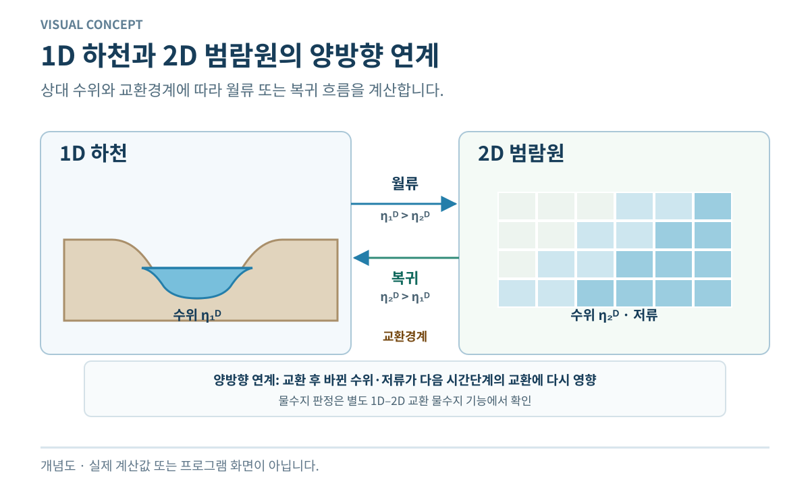
1D 하천과 2D 범람원의 상대 수위에 따라 월류와 복귀 방향이 달라지고, 교환 후의 수위·저류 변화가 다음 시간단계에 다시 영향을 주는 구조를 보세요.
양방향 연계 기능은 개발 완료되었습니다. 같은 교환경계에서 하천과 범람원 수위를 비교하고 교환체적을 1D와 2D에 반대 부호로 적용합니다. 결합 반복은 동일한 구간 시작상태에서 수행하며 확정된 교환만 채택합니다. 현행 동역학파–국부관성 경로와 단방향 후처리, 다른 계산기 조합은 구분해야 합니다.
1D 하천 수리상태, 2D 지형·수심, 제방·연결경계, 교환 시간구간.
Qex [m³/s], Vex [m³]. 월류를 양, 복귀를 음으로 둔 예시입니다.
월류·복귀유량, 하천 수위 피드백, 범람 전개와 교환 물수지.
이론·자료 근거 Bates, Horritt & Fewtrell (2010): local-inertial formulation ↗ · Hodges (2019): conservative finite-volume Saint-Venant forms ↗
관련 이론·수치방법 자세히 보기 →연결 위치·제방고·단면·DEM 수직기준이 맞아야 합니다. 같은 물의 양이 교환되는 것과 두 영역의 운동량을 완전 보존하는 것은 다릅니다.
범람원에서 물이 퍼지는 과정의 해석 방법을 검토할 때
수심·수면표고·유속, 침수영역과 시간 변화·최대값.
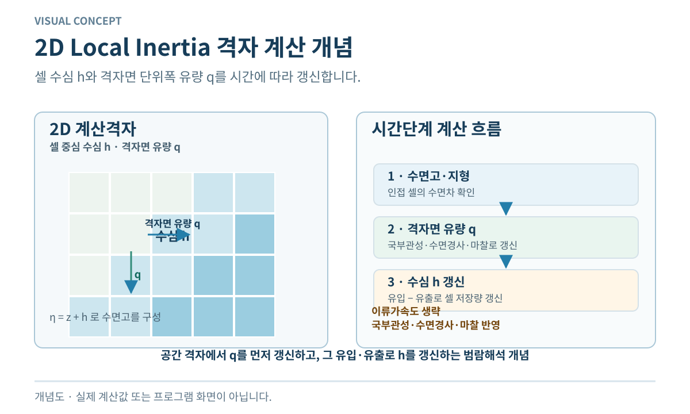
셀 중심의 수심 h와 격자면 유량 q를 구분하고, 수면고 차이로 q를 갱신한 뒤 유입·유출로 h를 갱신하는 시간단계 흐름을 보세요.
2D 국부관성 범람 기능은 개발 완료되었습니다. 격자 경계에서 이전 단위폭 유량과 수면경사에 의한 가속을 반영하고 마찰을 반음해 방식으로 처리합니다. 경계 유량을 체적으로 바꾸어 격자 저장을 보존형으로 갱신하며 마른 영역으로의 확산을 추적합니다. 이류 운동량을 생략하므로 Full SWE와 같은 방정식은 아닙니다.
수리 지형·격자, 조도, 초기 수심, 경계·교환유입·강우·배수.
한 방향 국부관성 설명식: q [m²/s], h·η [m], n: Manning 조도. 2D에서는 x·y 경계 흐름을 수심 연속식으로 연결합니다.
수심·수면표고·유속, 침수영역과 시간 변화·최대값.
이론·자료 근거 Bates, Horritt & Fewtrell (2010): local-inertial formulation ↗
관련 이론·수치방법 자세히 보기 →유속과 급변류 영향이 큰 구간은 국부관성 가정의 적합성을 검토합니다. 최소수심·조도·시간간격에 대한 민감도와 물수지를 함께 봅니다.
급격한 흐름 변화에 필요한 해석 범위를 검토할 때
수심·유속벡터·운동량 변화, 급격한 흐름 전이와 침수 결과.
Full SWE 계산 경로는 질량과 두 수평방향 운동량을 보존형으로 갱신합니다. 현재 구현에는 HLL 계열 경계 플럭스와 공간·시간 정확도 선택, 지형·마찰·마름·젖음 처리가 포함됩니다. 기본 국부관성 범람과 별도의 선택 경로이므로 지원하는 전체영역·격자·경계·연계 조합을 맞추어 사용합니다. 이류를 포함한다고 모든 경우에 자동으로 더 정확해지는 것은 아닙니다.
지원되는 수리격자·지형, 수심·두 방향 유량, 조도, 경계·소스.
h [m], u·v [m/s]. F·G는 질량·운동량 플럭스, S는 지형·마찰·외부 소스입니다.
수심·유속벡터·운동량 변화, 급격한 흐름 전이와 침수 결과.
이론·자료 근거 Clawpack Riemann book: shallow-water equations ↗ · Hodges (2019): conservative finite-volume Saint-Venant forms ↗
관련 이론·수치방법 자세히 보기 →작은 격자와 빠른 유속은 시간간격을 제한합니다. 국부관성 결과와 비교할 때 입력·경계·해상도를 동일하게 놓습니다.
넓은 계산영역과 관심지역의 해상도를 조정할 때
다중해상도 수리격자, 관심영역 결과와 계산량·해상도 비교.
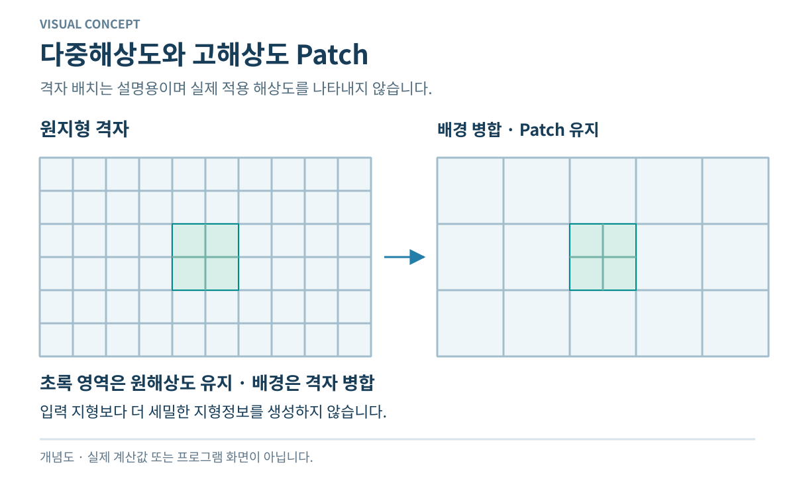
같은 원지형 격자에서 배경은 묶고 관심구간은 원해상도로 남기는 관계를 보세요.
원지형의 여러 셀을 배경 계산 셀로 묶고 관심영역은 더 세밀하게 유지합니다. 병합 셀에서는 저장량과 수면표고 관계를 이용하고, 서로 다른 크기의 셀 경계에서 같은 교환체적을 공유합니다. 입력자료보다 세밀한 지형을 새로 만들어내는 기능은 아니며, 국부관성·Full SWE의 지원 방식도 구분합니다.
원지형 격자, 관심영역 지정·추천, 병합 규칙과 수리 연결.
소격자의 표고 zk·면적 Ak로 구성하는 저장–수위 관계의 설명식입니다.
다중해상도 수리격자, 관심영역 결과와 계산량·해상도 비교.
이론·자료 근거 Hodges (2019): conservative finite-volume Saint-Venant forms ↗
관련 이론·수치방법 자세히 보기 →관심영역 경계의 저장·교환량 보존과 주요 지형 연결을 확인하고 원해상도 결과와 민감도를 비교합니다.
범람 해석에 강우·배수 등 추가 요인을 고려할 때
강우·배수 반영 수심, 구조물 유량, 농도 분포와 입자 이동.
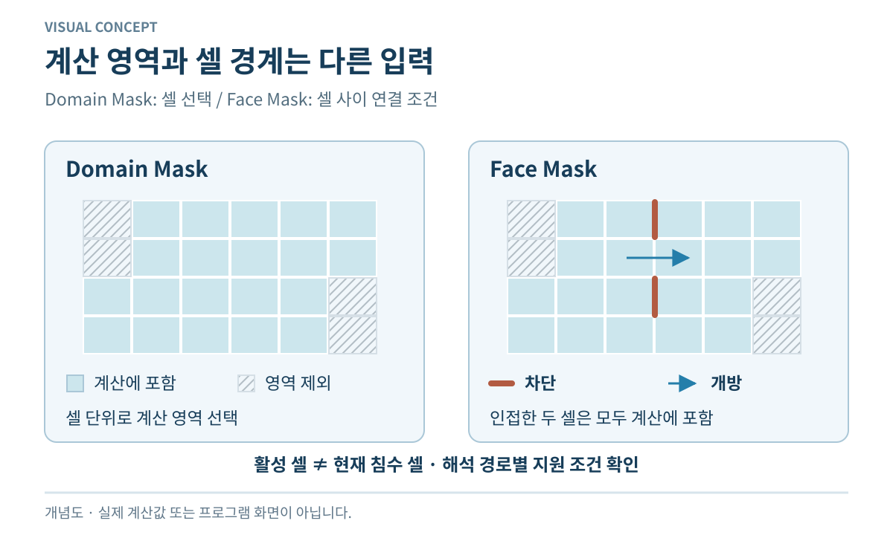
왼쪽은 계산 셀의 포함 여부, 오른쪽은 포함된 셀 사이의 연결 조건입니다. 같은 활성 셀도 경계 조건에 따라 연결이 달라집니다. 벽·개방만 표시한 개념 예시이며 지원 조건은 해석 경로마다 확인합니다.
직접강우와 배수는 수심 연속식의 유입·유출로, 구조물은 경계 유량조건으로 연결됩니다. 추적자 농도는 물과 함께 이동하는 질량으로 다루며, 입자는 계산된 속도장을 따라 위치를 갱신하는 별도 표현입니다. 구성요소가 존재하더라도 모든 수리계산기·격자·연계 조합에 동시에 적용되는 것은 아니므로 실제 지원 경로를 선택합니다.
직접강우·배수조건, 구조물 형상·개구, 추적자 주입·입자 초기 위치.
h [m], q [m²/s], 우변 [m/s]로 환산한 수심 연속식입니다.
강우·배수 반영 수심, 구조물 유량, 농도 분포와 입자 이동.
이론·자료 근거 Clawpack Riemann book: shallow-water equations ↗ · Unidata: NetCDF data model ↗
관련 이론·수치방법 자세히 보기 →하천을 통한 유입과 같은 강우를 2D에 중복 투입하지 않습니다. 입자 개수·위치를 수질 반응농도로 해석하지 않습니다.
사면의 토양이 깎이고 쌓이는 과정을 연구할 때
사면 유사 발생·이동·퇴적과 하천으로 전달되는 유사.
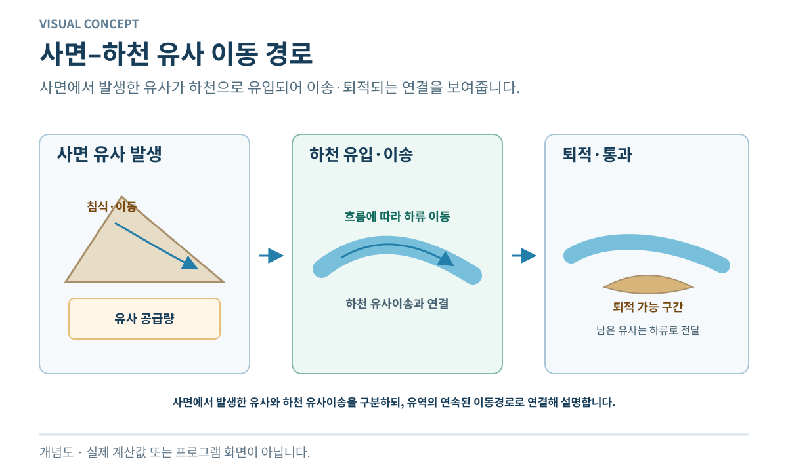
사면의 침식원에서 물을 따라 이동해 퇴적되는 순서를 보세요.
사면에서 생성된 유사와 물의 운반능을 비교하여 이동·퇴적을 계산하는 연구 기능입니다. 강우유출량이 같아도 토양 침식특성과 경사에 따라 유사량은 달라집니다. 유출량을 바로 유사량으로 바꾸는 것이 아니며 입경·침식식 등 선택한 조건에 맞는 관측자료로 적용성을 평가해야 합니다.
토양 침식특성, 경사, 유출량·유속, 유사 공급·저장.
유사 질량 보존의 개념식이며 특정 침식 경험식의 계수나 적용성을 대신하지 않습니다.
사면 유사 발생·이동·퇴적과 하천으로 전달되는 유사.
이론·자료 근거 K-DRUM: current capability status and scope ↗
관련 이론·수치방법 자세히 보기 →유사 질량·농도·체적의 단위를 구분하고 관측 유사량을 이용해 물수지와 별도의 질량수지를 평가합니다.
하천을 따라 유사가 이동하고 쌓이는 과정을 연구할 때
구간별 유사 이송·퇴적, 유출 유사량과 질량 변화.
상류에서 들어온 유사와 사면 기여를 하천의 운반능과 비교하여 하류 이송과 퇴적에 배분합니다. 물의 이동과 유사의 공급제한은 다르므로 유량만 맞아도 유사 농도가 맞는 것은 아닙니다. 하상 형태변화의 상세 해석까지 가능한지는 해당 연구 경로의 상태변수와 출력 범위를 별도로 확인합니다.
상류·측방 유사 공급, 유량·단면·경사, 운반 특성과 저장량.
구간별 유사 이송·퇴적, 유출 유사량과 질량 변화.
이론·자료 근거 K-DRUM: current capability status and scope ↗
관련 이론·수치방법 자세히 보기 →입경·단면·공급 유사량을 일치시켜 검토하고 유사이송 기능을 완전한 하상변동모형으로 확대 해석하지 않습니다.
반응 없이 이동하는 물질의 이동 경로를 연구할 때
농도 시계열, 질량 유출입과 잔존 질량.
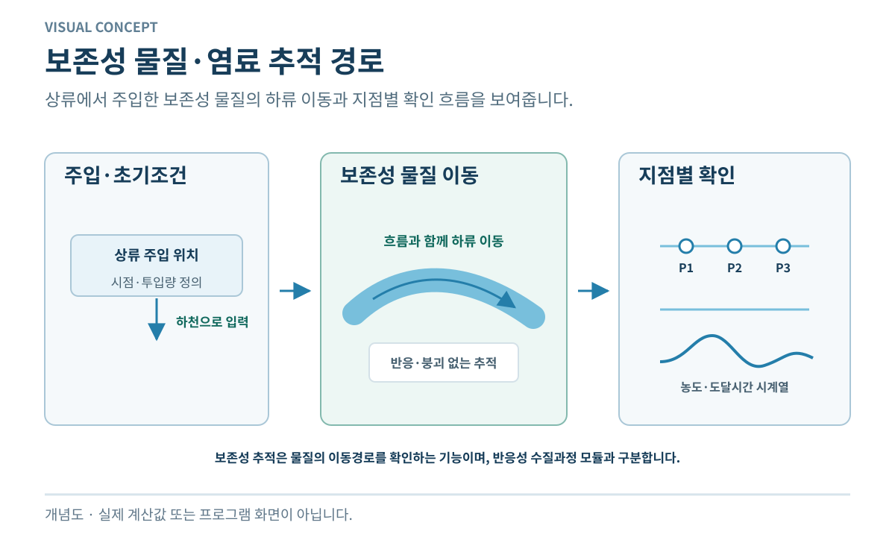
주입 위치와 하류의 관측 위치를 보세요. 색상은 이동 개념이며 실제 농도 등급이 아닙니다.
물에 포함된 질량을 유입·유출과 함께 갱신하고 가용 물의 체적으로 나누어 농도를 계산합니다. 농도 변화는 유입 질량뿐 아니라 희석·저장 변화에도 영향을 받습니다. 보존성 추적은 생화학적 반응이나 오염물질 분해를 자동 포함하지 않으므로 비활성 수질 과정 모듈과 구분합니다.
주입 위치·시각·질량, 하천 저장량·상하류 유량, 초기 농도.
M [kg], V [m³], C [kg/m³]의 보존성 혼합 설명식입니다.
농도 시계열, 질량 유출입과 잔존 질량.
이론·자료 근거 Clawpack Riemann book: shallow-water equations ↗
관련 이론·수치방법 자세히 보기 →물의 양이 작아지는 구간에서 농도의 민감성을 확인하고 주입·유출·저장의 질량 합계를 대조합니다.
수질 계산의 현재 지원 여부를 확인할 때
현재 실행 가능한 반응성 수질 결과는 제공하지 않습니다.
현재 빌드에서는 수질 계산이 비활성 상태입니다.
반응성 수질은 이송 외에 생성·소멸·반응속도와 외부 부하를 계산해야 합니다. 현재 활성 빌드에서는 해당 과정이 비활성 상태이므로 유사·보존성 추적자의 결과를 질소·인·BOD 결과로 안내하지 않습니다. 추후 재개발 시 반응식·단위·시간간격과 독립 수질자료에 대한 검증이 필요합니다.
재개발 시 필요한 수질 경계·반응계수·수온 등 자료와 과거 구현.
현재 실행 가능한 반응성 수질 결과는 제공하지 않습니다.
이론·자료 근거 K-DRUM: current capability status and scope ↗
관련 이론·수치방법 자세히 보기 →코드의 보존 여부와 현재 계산 가능 여부를 구분하며, 수질 결과를 기대하는 사용자는 기능 활성 범위를 먼저 확인해야 합니다.
계산 자원에 맞는 실행 방식을 검토할 때
계산시간·병렬 효율, 실행방식별 유량·저장·물수지 비교.
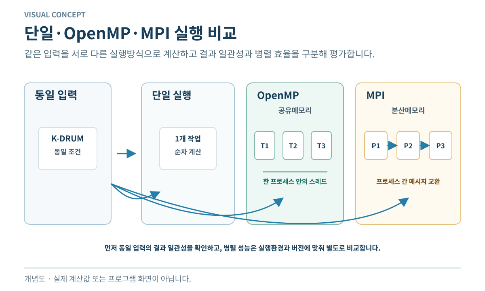
같은 입력이 단일·OpenMP·MPI 실행으로 나뉘는 구조를 보세요. OpenMP는 공유메모리 스레드, MPI는 분산메모리 프로세스로 표현하며 성능 수치는 제시하지 않습니다.
OpenMP는 공유메모리 스레드, MPI는 프로세스 간 분할을 사용합니다. 흐름방향의 선후관계나 하천망 연결 때문에 모든 작업을 독립적으로 나눌 수는 없습니다. 현재 점검한 소스 패키지는 OMP 중심이며, 과거 MPI 연구 성과와 실행파일별 지원 방식은 구분해야 합니다. 스레드를 늘릴 때는 계산 이득뿐 아니라 대기·동기화·입출력 비용도 평가합니다.
유역 규모·흐름 연결, 실행파일 종류, CPU·메모리와 병렬 설정.
T₁·Tp: 동일 작업의 경과시간, p: 병렬 작업자 수. 측정값이 있어야 계산할 수 있습니다.
계산시간·병렬 효율, 실행방식별 유량·저장·물수지 비교.
이론·자료 근거 K-DRUM: MPI distributed rainfall–runoff (2011) ↗ · OpenMP: specifications ↗
관련 이론·수치방법 자세히 보기 →동일 입력·컴퓨터·출력조건에서 시간과 결과를 비교합니다. 코어 수만으로 속도 향상 배수를 단정하지 않습니다.
결과의 변수·좌표·시각을 다른 도구에서 읽을 때
자기설명형 결과 파일, 시계열·공간분포와 분석도구 연결.
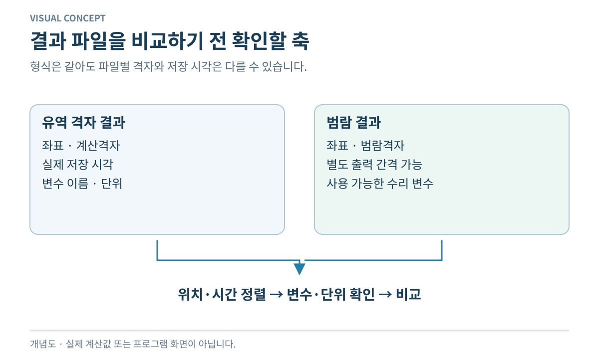
파일별 좌표·시간·변수·단위를 확인한 뒤 비교합니다. 공통 파일 형식이 같은 격자나 시각을 뜻하지는 않습니다.
차원은 배열의 축, 변수는 수심·유량 등의 값, 속성은 단위·좌표계·의미를 설명합니다. 같은 NetCDF 형식이어도 유역 격자와 범람 격자, 저장 간격과 시간 기준이 다를 수 있습니다. 진행 중 파일과 정상 마감 파일의 상태를 구분하고 분석 도구가 실제 축과 결측 표시를 읽도록 연결합니다.
계산된 격자·하천·범람 상태, 저장 변수·간격, 좌표·시간 기준.
자기설명형 결과 파일, 시계열·공간분포와 분석도구 연결.
이론·자료 근거 Unidata: NetCDF data model ↗
관련 이론·수치방법 자세히 보기 →파일 확장자만 보고 격자·시간이 같다고 가정하지 않고 차원·단위·결측값·최종 저장시각을 확인합니다.
계산 결과의 공간 분포와 시간 변화를 함께 살펴볼 때
지도·시계열·최대값과 관심지점 변화 비교.
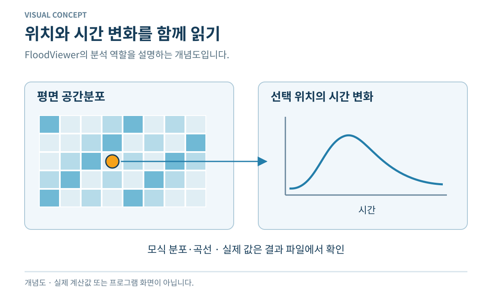
평면 지도에서 고른 위치와 시간 변화를 연결해 읽는 개념입니다. 실제 화면이나 계산 결과는 아닙니다.
원자료의 변수와 시각을 읽어 지도에 표시하고 선택지점의 시간 변화를 연결합니다. 최대수심 지도와 특정 시각의 수심은 서로 다른 결과이며, 색상 범위와 결측·마른 영역 표시도 해석에 영향을 줍니다. Viewer는 모형을 대신 계산하는 프로그램이 아니며, 기존 FloodViewer와 신규 통합 Studio의 지원 범위는 사용 버전별로 구분합니다.
지원 결과파일, 공간좌표·시간축·변수, 관심지점·영역.
지도·시계열·최대값과 관심지점 변화 비교.
이론·자료 근거 Unidata: NetCDF data model ↗
관련 이론·수치방법 자세히 보기 →자동 축 범위·범례·단위와 실제 원자료 값을 대조하고, 부분 결과 표시를 전체 모의 완료로 해석하지 않습니다.
여러 입력자료를 계산용 프로젝트로 구성할 때
입력 프로젝트, 검사 결과와 엔진용 입력자료.
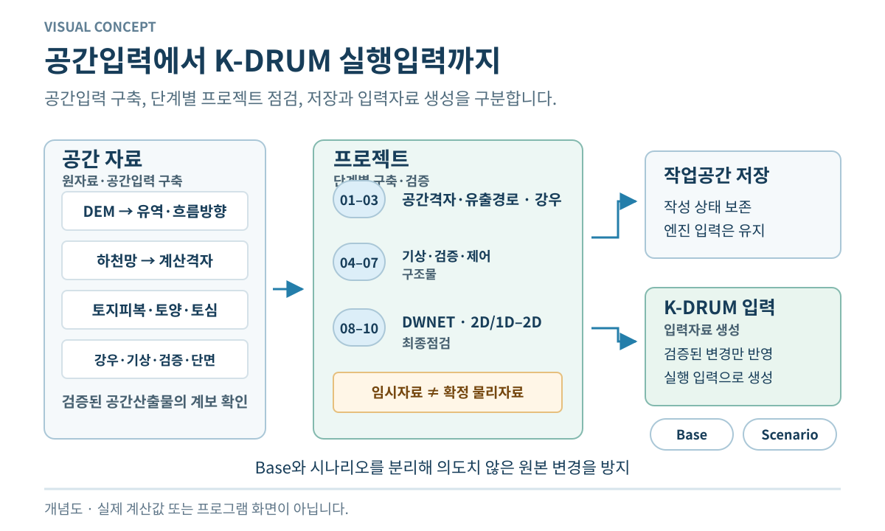
원자료를 프로젝트로 구성하고 검사한 뒤 엔진 입력으로 전달하는 역할입니다. 실제 편집 화면은 아닙니다.
원자료로부터 유역·흐름방향·하천망·계산격자를 구축하고, 시계열과 수리조건을 프로젝트에 연결합니다. 작업공간 저장과 계산엔진 입력파일 생성을 구분하며 기준안과 시나리오를 분리해 관리합니다. 새 K-DRUM Studio는 프로젝트·제어·실행·분석을 통합하는 별도 개발 작업이며, 기존 InputStudio를 단순히 새 제품명으로 바꿔 부르지 않습니다.
DEM·토지피복·토양·토심, 강우·기상, 하천·단면·구조물·경계.
입력 프로젝트, 검사 결과와 엔진용 입력자료.
이론·자료 근거 K-DRUM: current capability status and scope ↗
관련 이론·수치방법 자세히 보기 →완성되지 않은 입력을 임의 값으로 채우지 않고, 저장과 입력 생성·실행이 같은 동작인지 구분합니다.
하구의 종·연직 흐름과 염분 분포를 연구할 때
실험적 종·연직 흐름·염분 분포와 성층 변화.
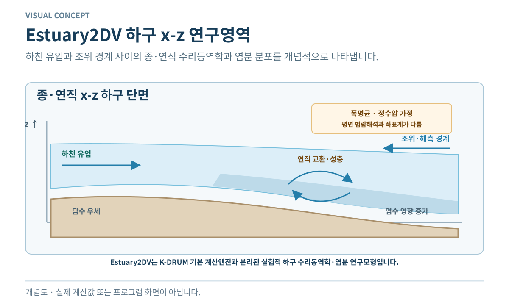
x-z 단면에서 하천 유입, 조위·해측 경계와 연직 교환·성층을 함께 보세요. 폭평균·정수압 연구영역이며 평면 범람해석과 구분됩니다.
평면 x–y 범람과 달리 종·연직 x–z 단면에서 수직 방향 염분·흐름 차이를 다룹니다. 폭평균·정수압 가정과 해당 버전의 수송·혼합 표현을 사용하며 Core의 기본 1D·2D 홍수 기능과 구분됩니다. 염수 침입과 성층 해석에는 조위·염분·형상·혼합 자료가 필요합니다.
하구 종단·수심·수직층, 상류 유입, 조위·염분 경계와 초기 상태.
실험적 종·연직 흐름·염분 분포와 성층 변화.
이론·자료 근거 K-DRUM: current capability status and scope ↗
관련 이론·수치방법 자세히 보기 →2DV를 일반적인 평면 2D 또는 완전 3D 모형으로 설명하지 않고, 별도 연구 검증범위를 표시합니다.
하천의 종단·횡단과 시계열 결과를 비교할 때
종·횡단면 수위, 지점별 수문곡선과 연동 비교.
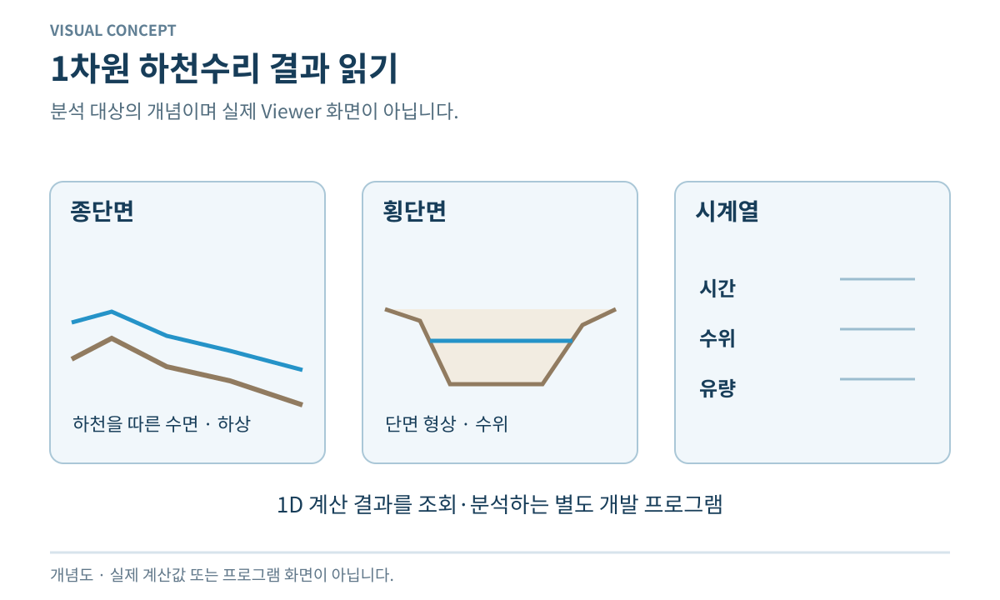
종단면은 하천을 따른 변화, 횡단면은 단면 형상, 시계열은 시간 변화를 설명합니다. 실제 화면은 아닙니다.
동일한 하천 지점과 시각을 여러 보기에 연결하여 종단 수위 변화, 횡단면 침수와 시계열을 함께 읽습니다. 관측과 계산을 비교할 때에는 지점·시각·표고 기준을 맞춰야 합니다. 기존 전문 뷰어, C# 전환 후보와 Studio 통합 개발의 구현·검증 범위를 구분하고 서로 완전히 동일하다고 가정하지 않습니다.
1D 하천망·단면 결과, 수위·유량 시계열, 관측자료와 표시 설정.
종·횡단면 수위, 지점별 수문곡선과 연동 비교.
이론·자료 근거 Unidata: NetCDF data model ↗ · USACE: 1D unsteady-flow hydrodynamics ↗
관련 이론·수치방법 자세히 보기 →그래프가 보인다는 사실과 원본의 모든 편집·연동 기능이 보존됐다는 판단을 구분합니다. 화면 값은 계산 원자료와 대조합니다.
결과의 시간·공간 특성을 설명하는 개념도이며 실제 유역 계산값은 아닙니다. 계산 완료, 물수지 일관성 및 관측 비교는 서로 다른 평가 항목입니다.
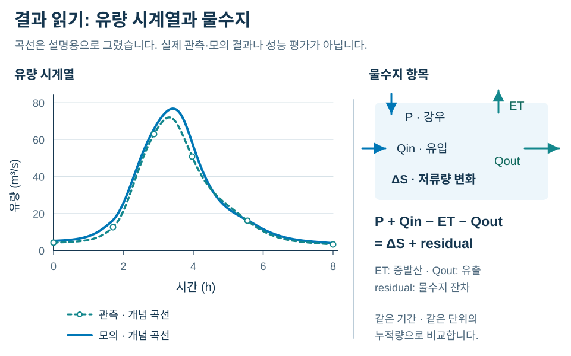
별도 침수영역 매핑은 지형·수위원·허용 영역으로 침수 후보영역을 산정합니다. 시간에 따른 수심·유량을 계산하는 2D 수리해석과 구분하고, 먼저 어떤 해석 기능으로 생성된 결과인지 확인하세요.
강우·토양수분·유출의 공간분포는 동일한 영역과 시간 범위에서 비교됩니다. 범람 출력은 선택한 수리해석 방식·지형·경계조건을 기준으로 해석합니다.
수문곡선은 관측과 계산의 첨두, 발생 시점 및 감수부 특성을 비교하는 자료입니다. 비교 기준은 동일한 단위와 시간 간격입니다.
물수지 평가는 유입·유출·저장량 변화·손실의 정의와 집계 범위를 기준으로 합니다. 실행 성공만으로 물수지의 타당성이나 예측 정확도가 입증되지는 않습니다.
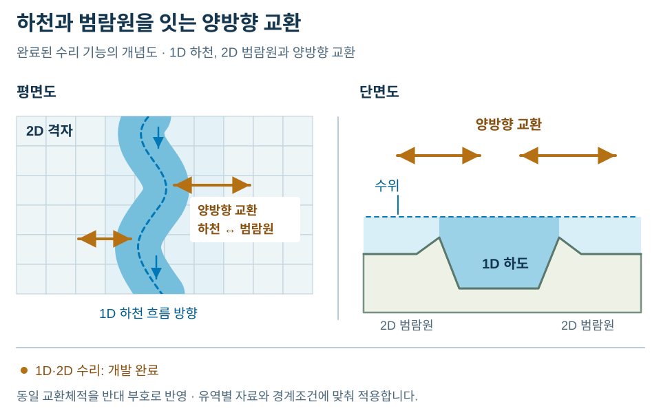
입력 작성, 계산, 출력 저장과 결과 분석은 프로그램별로 구분된 역할입니다. 각 프로그램의 공개 여부와 개발 상태는 K-DRUM의 기본 수문 기능과 별도로 관리됩니다.
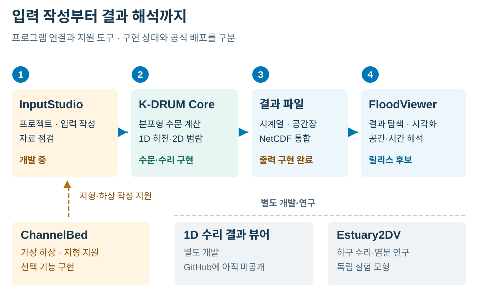
K-DRUM Core는 확립된 분포형 수문과 운동파 흐름추적을 중심으로 구성됩니다. 수리·범람 기능도 포함되어 있으나, 1D 하천수리·2D 범람·양방향 연계는 개발 완료 기능이고 연구·비활성 모듈은 별도로 구분합니다.
기존 InputStudio는 공간입력·프로젝트 작성과 실행 전 정합성 점검을 담당합니다.
계산 결과의 지도와 시계열을 연결해 침수 전개·수심·유속을 읽습니다.
DEM에서 부족한 수중 하상 정보를 단면·중심선 자료와 결합해 보완합니다.
수문·수리 결과를 변수·단위·좌표·시간 정보와 함께 NetCDF로 기록합니다.
하천망·종단면·횡단면·시계열을 연결하여 1D 수리 결과를 분석합니다.
아직 공개 배포되지 않았습니다.
폭평균 종·연직 영역에서 하구 흐름과 염분 성층을 연구하는 별도 모형입니다.
공개 연구는 대상 유역, 입력자료와 적용 범위에 따른 K-DRUM의 활용 사례를 제시합니다.
2026
2025년 남강댐 유역의 산불 피해 이후 극한호우 영향
2026년 공개 학술발표에서는 산불 피해가 발생한 남강댐 유역과 이어진 극한호우를 대상으로 K-DRUM을 활용한 강우유출 영향 분석을 소개했습니다.
특정 유역의 산불 피해와 극한강우에 따른 유출반응을 검토한 공개 적용 사례입니다.
2026년 학술발표에 근거한 활용 사례이며, 새로운 산불 모듈의 정식 공개나 모든 유역에 대한 예측정확도 검증을 의미하지 않습니다.
분포형 수문 모형(K-DRUM)을 활용한 2025년 남강댐 유역의 산불피해와 이어진 극한 호우가 강우 유출에 미치는 영향 분석 ↗
2024
제주 물순환 해석에서 수문·지하수모형의 연계 가능성
2024년 학술발표에서 제주도 물순환 해석을 위한 K-DRUM·K-GW의 적용성과 연계 개선 방향을 검토했습니다.
분포형 강우유출모형과 별도 지하수모형의 역할을 구분하고 지표·지하수 연계에 필요한 자료와 해석 범위를 논의했습니다.
공개 학술발표에 근거한 연구 사례입니다. K-DRUM 단독으로 완전한 지하수유동을 해석하거나 연계 기능이 공식 배포본에서 검증 완료되었다는 뜻은 아닙니다.
2017
강우 종료 후에도 지속되는 하천 유출의 연계 해석
2017년 학술발표는 장기 물순환과 갈수기 유출 해석을 위해 K-DRUM과 지하수유동모형 MODFLOW를 연계하는 방법을 제시했습니다.
K-DRUM에서 계산한 심부 침루량을 MODFLOW의 지하수 함양 입력으로 사용하고, MODFLOW의 기저유량을 K-DRUM 하천유출에 반영하는 연계 방안을 설명했습니다.
2017년의 연계 방법과 활용 방향을 소개한 연구입니다. 현재 D층 지연 복귀·하천 침투 연계는 별도 구현된 수문학적 저장·교환 기능이며, 이 연구 하나로 현재 배포본의 모든 지하수 연계 성능을 판단하지 않습니다.
2013
유역의 적설과 융설을 반영한 장기유출 모의
파키스탄 Kunhar강 유역을 대상으로 고도에 따른 기상 차이와 적설·융설을 고려한 장기유출 모의를 수행했습니다.
GIS 공간자료를 바탕으로 고도에 따른 기온·강우 입력을 구성하고, 적설과 융설 과정을 포함해 장기 유량을 계산했습니다.
2013년 특정 산지 유역의 적용 연구입니다. 적설·융설은 공개 연구로 확인되는 기반 기능이며, 다른 유역에서의 적용에는 해당 유역의 기상자료와 검증조건이 필요합니다.
2012
강우의 시공간 분포를 반영한 유역 홍수유출 모의
남강 유역을 대상으로 태풍과 대류성 호우 조건에서 레이더 강우를 이용한 홍수유출 모의의 적용성을 살폈습니다.
레이더 강우를 계산격자에 배분하고, DEM·토지피복·토양도에서 추출한 GIS 수문자료를 입력했습니다. 침투와 지표·지표하 유출을 계산하고 운동파 기반으로 하천망을 따라 유량을 추적했습니다.
2012년 논문의 호우사상 모의 연구입니다. 개발 완료된 현행 1D 동역학파 하천망·2D 범람의 별도 적용 검증과는 구분되는 기반 수문 연구입니다.
Development and application of GIS based K-DRUM for flood runoff simulation using radar rainfall ↗
공식 프로그램은 MyWater K-Series 목록에서 확인합니다. 이 홈페이지는 실행파일을 직접 배포하지 않습니다.
K-DRUM · COMMUNITY
사용 중 궁금한 점과 개선 아이디어를 나누고, 유용한 답변을 함께 축적합니다.
질문과 개선 의견은 한글로 작성할 수 있습니다. 게시판에서 ‘New discussion’을 선택하면 됩니다. 게시글은 공개되며 작성하려면 GitHub 로그인이 필요합니다.
모형 설치, 입력자료 준비, 모의 실행과 결과 해석
사용 과정의 불편사항, 재현 가능한 오류 및 개선 요청
새로운 해석 기능, 활용 분야 및 기술 확산 아이디어